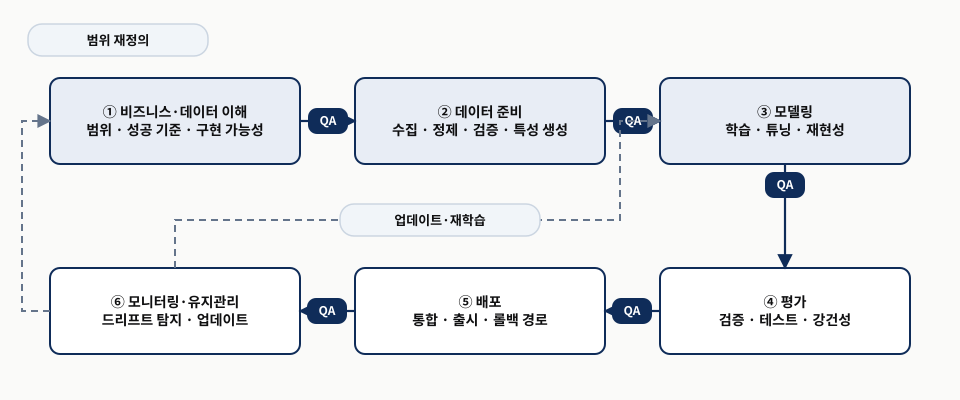
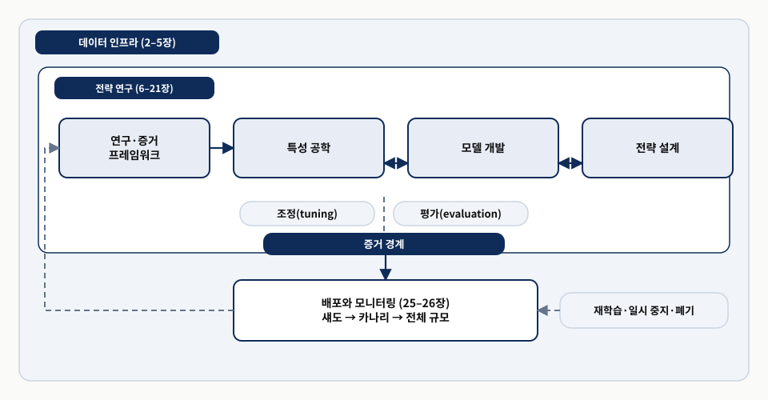
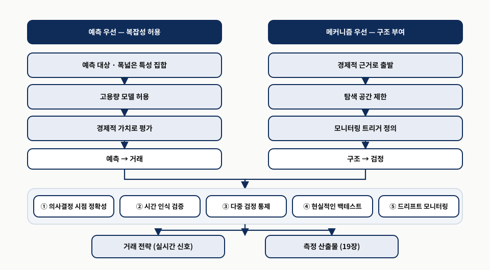
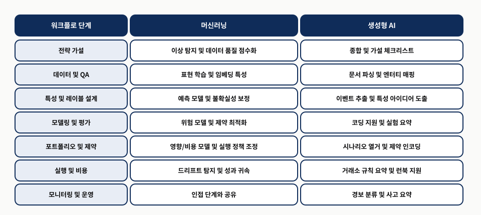
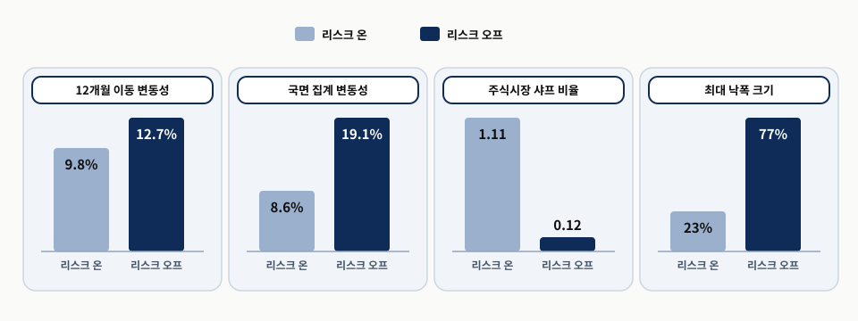
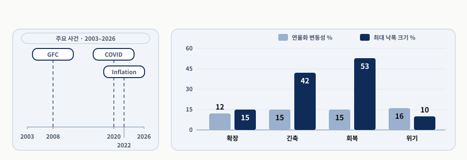

프로세스가 곧 경쟁 우위입니다
Chapter 1
0. 핵심 요약
시장은 계속 변한다. 2020년 팬데믹의 유동성 충격, 2021년 밈 주식의 심리 충격, 2021–2023년 인플레이션 급등의 거시 국면 전환, 소수 초대형 종목으로의 쏠림이 차례로 2010년대 데이터에 맞춘 가정을 압박했다. 네 사건의 원인은 서로 달랐지만 교훈은 하나였다 — 최근 관측치로 학습한 관계는 환경이 바뀌면 믿기 어렵다. 지진이 부실 시공을 만들어 내지 않고 이미 있던 부실 시공을 무너뜨려 드러내듯, 이 충격들도 새로운 취약성을 만든 것이 아니라 원래 있던 취약성을 드러냈다.
그래서 이 장은 경쟁력의 위치를 옮긴다. 하나의 모델이 모든 국면에서 무기한 최적으로 남을 수는 없으므로, 우위는 실행하기 어려운 국면 전환 예측이 아니라 아이디어를 엄격히 검증하고 성과를 체계적으로 감시하며 성능 악화에 미리 정한 방식으로 대응하는 능력에서 나온다. Andrew Lo의 적응적 시장 가설도 같은 방향을 가리킨다. 시장 효율성은 늘 유지되는 조건이 아니라 참여자 구성·자본·기술·규제·기회가 만드는 생태계의 결과이고, 자본이 몰릴수록 기회는 약해지며 조건이 다시 유리해지면 전략이 살아나기도 한다.
- 문제 — 시장이 계속 변하는데 정적인 모델의 성능은 왜 약해지고, 그 변화를 무엇이라 부를 것인가?
- 메커니즘 — 데이터 인프라 위에 전략 연구 루프를 세우고, 탐색과 확인을 증거 경계로 가르며, 운영 결과를 재학습·일시 중지·폐기 트리거로 되돌린다.
- 판단 — 인과 추론과 생성형 AI는 규율의 대체물이 아니라 증폭기다. 통제가 약하면 그럴듯한 오류를 대량 생산한다.
| 절 | 답하는 질문 | 핵심 장치 | 남는 판단 |
|---|---|---|---|
| 1.1 | 왜 모델보다 프로세스인가 | 단절·국면·드리프트 어휘, CRISP-ML(Q) 생애주기 | 영구히 최적인 모델은 없다 |
| 1.2 | 워크플로는 무엇으로 이뤄지는가 | 데이터 인프라 / 전략 연구 / 증거 경계 / 배포·모니터링 | 평가 규칙은 먼저 동결한다 |
| 1.3 | 인과 추론과 생성형 AI는 어디에 놓이는가 | 두 출발점, 다섯 안전장치, 단계별 역할 분담 | 도구는 규율의 증폭기다 |
| 1.4 | 시장 국면 변화를 어떻게 다루는가 | 사후 레이블링·백테스트 조건화·실시간 모니터링의 분리 | 타이밍이 아니라 위험 관리 |
| 1.5 | 독립 연구자는 무엇이 다른가 | 자초한 네 오류, 다섯 점검 지점, 재사용 인프라 | 외부 문지기가 없으면 스스로 만든다 |
| 1.6 | 무엇을 가지고 나가는가 | 적응 가능한 연구-운영 루프 | 절차가 축적되면 다음 전략이 빨라진다 |
이 리포트는 원서 1장의 절 순서와 번호를 그대로 따르고, 원자료 통합 해설판이 절마다 덧붙인 학습 보조 예시와 그 대응 관계를 본문 산문으로 통합했다. 발표용 슬라이드는 같은 폴더의 발표자료에 있다.
1.1 프로세스 규율이 중요한 이유 — 정교한 모델만으로는 부족한 까닭
- 프로세스 규율의 상대적 가치를 키운 세 가지 변화 — 시장 행동의 변화, 모델링 자유도의 확대, 연구 도구의 가속
- 변화를 부르는 네 어휘 — 구조적 단절, 국면, 드리프트(데이터·개념), 온라인 탐지
- CRISP-ML(Q)가 보여 주는 생애주기와 단계 사이 QA, 그리고 규율이 막아 주는 퀀트 연구의 다섯 실패
금융시장은 추론 과정의 약점을 실제 비용으로 드러낸다. 불안정하거나 잡음이 큰 작은 효과를 의심 없이 믿는 문제부터 유동성·거래 비용·실행 시점·용량 같은 현실의 마찰을 빼놓는 문제까지, 모두 백테스트와 실거래의 간극을 키운다. 이런 어려움 자체는 오래됐지만 세 가지 변화가 저울을 기울였다. 첫째, 시장 행동이 갑자기 끊기기도 하고 서서히 이동하기도 해서 한 기간에 맞았던 가정이 다음 기간에는 틀릴 수 있다. 둘째, 모델링 자유도가 넓어지면서 과적합을 만들기는 쉬워졌지만 그것이 과적합임을 밝혀내기는 더 어려워졌다. 셋째, 연구 도구가 빨라져 반복과 모니터링이 개선된 만큼 데이터 마이닝과 취약한 시스템의 배포도 같은 속도로 빨라졌다.
두 번째 항목은 사진 편집 도구에 빗대면 분명해진다. 편집 프로그램이 좋아지면 멋진 사진을 만들기도 쉬워지지만, 보정으로 꾸며 낸 사진과 실제로 잘 찍은 사진을 구별하기는 오히려 더 어려워진다. 여기서 편집 도구의 발전이 모델링 자유도의 확대와 연구 도구의 가속에 해당하고, 진위를 가리기 어려워진 상황이 과적합 판별의 난이도 상승에 해당한다. 비유가 맞지 않는 지점도 있다. 사진은 원본과 대조할 수 있지만 금융 시계열에는 대조할 원본이 없고, 그래서 판별은 사후 비교가 아니라 사전에 고정한 절차로만 가능하다.
네 가지 충격파와 가정의 취약성 — 2020–2025년이 드러낸 문제
2020년부터 2025년 사이의 교란은 2010년대 데이터에 맞춰 보정한 가정을 차례로 압박했다. 2020년 팬데믹에서는 국채 중개 기능이 압박받았고(Duffie, 2020) 상관관계가 급변하면서 분산투자 가정이 약해졌다. 자산 간 관계가 고정된 구조가 아니라 국면에 의존할 수 있음을 보여 준 사례다. 2021년 밈 주식 사태에서는 심리와 포지셔닝이 만든 자금 흐름이 펀더멘털을 상당 기간 압도했고, 정상화가 더 빨리 일어날 것이라 가정하고 짧은 보유 기간과 위험 한도를 둔 평균회귀 시스템이 흔들렸다. 2021–2023년 인플레이션 급등은 변동성을 높이고 주식과 채권의 공동 움직임을 바꿔, 저인플레이션 10년에 맞춘 모델과 흔히 쓰던 포트폴리오 헤지 경험칙을 함께 불안정하게 만들었다(Marshall, 2023). 주식 집중 사태에서는 지수 수익률이 소수 초대형 종목에 이례적으로 집중되면서 시장 폭·분산투자·요인 균형에 민감한 전략이 부진했고, 겉으로는 ‘시장’ 익스포저여도 실제로는 집중 익스포저일 수 있다는 점이 드러났다.
겨울 한 철의 교통량만 보고 설계한 도로를 떠올리면 네 사건의 공통 구조가 보인다. 그 도로는 여름 휴가철의 유입에, 대규모 행사가 만든 쏠림에, 물가 인상으로 달라진 통행 패턴에, 특정 구간으로만 몰리는 차량에 차례로 막힌다. 겨울 한 철 교통량이 2010년대 데이터에 맞춘 가정에 해당하고 네 가지 막힘이 네 충격파에 각각 대응한다. 원인이 서로 달라도 한 시기의 관측으로 세운 설계는 조건이 바뀌면 무너진다는 결론은 같다.
이 네 사건은 예외적 현상이라기보다 최근에 관측된 반복 유형이다. 유동성 위기, 심리의 연쇄 반응, 정책 변화, 쏠림은 다른 촉발 요인으로 다시 나타날 수 있다. 화재의 원인은 매번 다르지만 건물 점검표에는 소화기 압력·비상구 개방·감지기 작동이 고정 항목으로 들어가는 것과 같다. 안정된 조건만 전제한 워크플로는 불안정성과 성능 저하를 찾아내는 점검을 명시적으로 넣어야 비로소 완결된다.
변화를 설명하기 위한 어휘 — 단절·국면·드리프트를 구분하기
적응형 시스템을 운영하려면 데이터 생성 과정의 변화를 정확히 부를 수 있어야 한다. 흔히 섞어 쓰는 네 개념은 연구와 프로덕션에서 맡는 역할이 서로 다르다. 한 가게의 매출이 떨어졌을 때 “리모델링한 날부터 달라졌다”는 시점 진술, “여름에는 원래 이렇다”는 상태 진술, “우리 매출 예측표가 요즘 계속 틀린다”는 예측 오류 진술이 서로 다른 말인 것과 같다. 시점 진술이 구조적 단절, 상태 진술이 국면, 예측표가 틀린다는 진술이 드리프트에 해당한다. 손님 구성 자체가 바뀐 것은 데이터 드리프트이고, 같은 손님이 예전과 다른 것을 주문하게 된 것은 개념 드리프트다. 월말 정산을 끝낸 뒤 “지난달은 비수기였다”고 이름 붙이는 일이 사후 레이블링이며, 지금 이 순간 비수기 진입을 알아채려는 일이 온라인 탐지다.
| 용어 | 묻는 것 | 한 줄 정의 | 예 |
|---|---|---|---|
| 구조적 단절 (structural break) | 언제 바뀌었나 | 데이터 생성 과정이 갑자기 다른 상태로 넘어가는 변화 지점 | COVID-19의 시작 |
| 국면 (regime) | 어떤 상태가 지속되나 | 한 상태 안에서는 비교적 안정적이지만 다른 상태와는 실질적으로 다른 지속적 상태 | 저인플레이션 대 고인플레이션 |
| 데이터 드리프트 (data drift) | 입력이 달라졌나 | 입력 특성의 분포가 이동하는 현상 | 거래 종목 구성의 이동 |
| 개념 드리프트 (concept drift) | 관계가 달라졌나 | 특성과 목표값 사이의 관계가 바뀌는 현상 | 같은 신호의 부호 반전 |
| 온라인 탐지 (online detection) | 지금 알아챌 수 있나 | 의사결정 시점까지 실제로 알 수 있었던 정보만으로 변화를 실시간 식별하는 운영 과제 | 워크포워드 모니터링 |
| 사후 레이블링 (ex post labeling) | 지나고 나서 부르면 | 전체 이력을 본 뒤 상태에 이름을 붙이는 설명 작업 | 국면 지도 작성 |
드리프트에는 한 가지 주의가 따른다. 운영 중 드리프트가 감지되었다는 사실만으로는 원인을 진단할 수 없다. 예측표가 틀린다는 사실이 리모델링 탓인지 계절 탓인지 말해 주지 않는 것과 같아서, 데이터 무결성·특성 유효성·실행 조건·국면 익스포저를 조사하라는 경보로 받아들여야 한다. 개념 드리프트와 구조적 단절의 차이도 실체보다 관점에 있다. 같은 기저 변화를 통계적 과정으로 보느냐 모델 오류로 보느냐의 차이다. 이 구분이 모니터링의 임무를 선명하게 만든다. 연구용 백테스트에서는 사후 국면 레이블을 사용할 수 있어도, 라이브 전략은 미래를 본 레이블에 의존할 수 없다.
왜 프로세스가 모델보다 중요한가 — 영구히 최적인 모델은 없습니다
2020년대의 충격과 그 이전 사건들이 보여 준 실무 제약은 분명하다. 하나의 모델이 모든 국면에서 무기한 최적으로 남을 수는 없다. 따라서 경쟁력은 실행하기 어려운 국면 전환 예측보다, 아이디어를 엄격히 검증하고 성과를 체계적으로 감시하며 성능 악화에 미리 정한 방식으로 대응하는 능력에서 나온다. Fabozzi와 Stenholm(2025)이 현대 자산운용의 맥락에서 강조하듯 규율 있는 준비와 적응이 충동과 과신보다 낫다.
Andrew Lo의 적응적 시장 가설(Adaptive Markets Hypothesis, 2004) 도 같은 방향을 가리킨다. 이 관점은 시장 효율성을 늘 유지되는 조건이 아니라 진화의 결과로 본다. 시장에는 서로 다른 참여자들이 학습하고 경쟁하며 적응하고, 효율성의 정도는 참여자 구성·자본·기술·규제·기회의 조합인 ‘시장 생태계’에 따라 달라진다. 조건이 안정적일 때는 행태가 정상 상태처럼 보일 수 있지만, 환경이 바뀌면 일시적인 이상 현상이 생겨나고 지속되다가 사라지기도 한다. 한 가지 낚시 미끼가 모든 계절과 물때에 최고일 수 없는 상황에 가깝다. 미끼가 특정 모델, 계절과 물때가 국면, 물고기의 학습과 낚시꾼의 몰림이 참여자들의 적응에 해당한다. 자리가 붐빌수록 조과가 떨어지는 현상이 자본이 몰려 활용될수록 기회가 약해진다는 서술에, 계절이 돌아오면 그 자리가 살아나는 것이 조건이 다시 유리해지면 전략이 살아날 수도 있다는 서술에 대응한다.
실무적 함의는 운영 방식에 있다. 위험 프리미엄·상관관계·실행 비용은 참여자와 제약에 따라 변하고, 수익 기회는 자본이 몰려 활용될수록 약해진다. 그러므로 지속 가능한 우위, 곧 수익성 있는 거래를 반복해서 만드는 원천은 ‘정답 모델’ 선택보다 연구-운영 전환 루프에 더 많이 의존한다. 성능 저하를 일찍 찾고, 잡음과 국면 변화를 구별하며, 여전히 견고한 전략으로 자본을 다시 배분하는 루프다. 여러 자판기를 운영하는 사람의 수익이 어떤 음료가 정답인지 고르는 데서 나오지 않고, 어느 자판기의 매출이 꺾였는지 매주 확인하고 그것이 일시적 날씨 탓인지 상권 변화 탓인지 가려낸 뒤 재고와 자리를 옮기는 데서 나오는 것과 같은 구조다.
연구에서 프로덕션으로 이어지는 시스템으로서의 프로세스 — 실험을 생애주기로 묶기
거래용 ML을 서로 끊어진 실험의 집합으로 다루면 실패에서 배운 내용을 다음 결정에 축적하기 어렵다. 여기서는 이를 관리되는 생애주기로 본다. López de Prado(2018)가 말한 알파 공장(alpha factory) 은 명시적 제약 아래 전략을 생성·평가·배포·모니터링하는 반복 가능한 파이프라인이다. 매번 다른 방식으로 시제품을 만드는 공방과, 설계·시험·양산·사후 점검 단계가 고정된 공장은 실패에서 배우는 방식이 다르다. 공장에서는 어느 단계에서 불량이 났는지 기록이 남아 다음 생산에 반영되지만 공방에서는 같은 실패를 반복하기 쉽다.
이 원리는 트레이딩에만 해당하지 않는다. 응용 ML과 품질 공학에서도 모델은 모니터링·진단·통제된 개입까지 포함한 생애주기의 한 구성요소이며, 산업 현장에서는 알고리즘 자체보다 프로세스가 실패를 더 자주 지배한다. Gartner(2018)와 RAND의 AI 구현 검토(Ryseff et al., 2024)도 데이터·모델링·조직 관행의 복합 문제로 많은 이니셔티브가 잘못된 결과를 낼 수 있다고 경고했다. 트레이딩에서는 비정상성(non-stationarity) 과 거래 비용 때문에 작은 데이터·모델 오류가 큰 금전 손실로 증폭될 수 있고, 모델링의 성공을 예측 정확도로만 정의할 수도 없다. 택배 경로 예측이 90% 맞아도 틀린 10%가 매번 왕복 100km 재배송이라면 정확도만으로 그 사업이 남는다고 말할 수 없는 것과 같다. 최종 목표는 시장 조건이 변하는 가운데 비용을 차감한 뒤에도 남는 위험조정 성과다.

읽는 순서는 ① 비즈니스·데이터 이해에서 시계 방향으로 ⑥ 모니터링·유지관리까지이고, 사각형 사이의 진청 칩이 단계 인계 시점의 QA 점검이다. 점선 두 갈래는 되돌아가는 깊이를 구분한다 — 운영 결과는 보통 모델링의 업데이트·재학습으로 돌아가지만, 더 근본적인 문제는 첫 단계의 범위 재정의까지 올라간다. 원자료 그림 1.1의 단계·QA·피드백 관계를 공개용으로 재배치했다.그림 1의 흐름은 각 단계 사이에 QA 점검을 둔다. ① 비즈니스·데이터 이해에서 범위·성공 기준·구현 가능성을 정하고, ② 데이터 준비에서 수집·정제·검증과 특성 생성을 하며, ③ 모델링에서 학습·튜닝과 재현성을 확보하고, ④ 평가에서 검증·테스트로 강건성을 확인한 뒤, ⑤ 배포에서 시스템을 통합·출시하고 실패 시 되돌릴 방법을 마련하며, ⑥ 모니터링·유지관리에서 드리프트를 탐지하고 업데이트한 뒤 다시 평가한다. 건물 시공이 설계 승인·자재 검수·골조 공사·구조 검사·준공·정기 안전점검 순으로 진행되고 각 단계 사이에 감리가 들어가는 구조와 같으며, 그 감리가 그림의 QA 점검에 대응한다.
도표 아래의 피드백 화살표도 중요하다. 운영 결과는 모델링 단계의 업데이트·재학습으로 돌아갈 수 있고, 더 근본적인 문제가 발견되면 비즈니스·데이터 이해 단계에서 범위를 다시 정한다. 준공한 건물에 누수가 생겼을 때 방수 시공만 다시 하면 되는 경우도 있지만 배수 설계 자체가 틀렸다면 설계 단계로 돌아가야 하는 것과 같다. 어느 단계까지 되돌아가야 하는지가 문제의 깊이에 따라 달라진다는 뜻이며, 그래서 품질 보증은 마지막 검사 한 번이 아니라 생애주기 전체의 점검망이다.
CRISP-DM(2000)이 비즈니스 이해에서 배포까지의 절차를 구조화했고 CRISP-ML(Q)(Studer et al., 2021)가 이를 현대 ML 시스템에 맞게 확장했다. 트레이딩에 이 생애주기를 적용할 때는 고유한 제약이 더해진다. 비정상성 때문에 실질적으로 유효한 표본이 제한되고, 누출(leakage)과 특정 시점 기준(point-in-time) 오류 가 생길 여지가 넓으며, 목표도 단순한 정확도가 아니라 거래 비용·시장 충격·위험 제약을 반영한 성과다. 기출문제를 풀면서 답지를 슬쩍 본 채로 채점하면 연습 점수는 높게 나오지만 실제 시험 점수를 예측하지 못하는 상황에 가깝다. 답지를 보는 일이 누출이고, 문제를 풀던 시점에 답지가 공개돼 있지 않았다는 사실을 지키는 것이 특정 시점 기준 정확성이며, 기출문제 자체가 적어 반복 연습에 한계가 있는 상황이 비정상성 때문에 유효 표본이 제한되는 문제에 대응한다.
| 실패 | 무슨 일이 벌어지나 | 막는 장치 |
|---|---|---|
| 데이터 마이닝과 서사적 과적합 | 무엇이 가설을 반증할지 미리 정하지 않고, 결과를 본 뒤 그럴듯한 가설을 붙인다 | 반증 조건의 사전 명시 |
| 누출과 비특정 시점 기준 데이터 | 당시에는 알 수 없던 수정치, 생존 편향, 기업행위, 타임스탬프 오류를 의사결정에 쓴다 | 특정 시점 기준 파이프라인 |
| 다중 검정과 선택 편향 | 많은 변형을 탐색한 뒤 우연히 작동한 하나를 신호로 오인한다(Harvey, Liu, and Zhu, 2016) | 시행 기록과 선택 조정 추론 |
| 구현 가능성 무시 | 예측 가능성과, 비용·제약·실행 마찰 뒤에도 남는 거래 가능한 우위를 혼동한다 | 범위 설정 단계의 구현 가능성 점검 |
| 매몰 비용과 지연된 청산 | 현재 증거가 아니라 과거에 효과가 있었다는 이유로 쇠퇴하는 전략을 계속 보유한다 | 사전에 정한 폐기 트리거 |
표 3의 다섯 항목은 로또에 빗대면 한 장면으로 묶인다. 100가지 조합을 사서 한 조합이 맞았을 때 그 조합에 “생일과 기념일을 섞은 규칙”이라는 이름을 붙이면 규칙을 발견한 것처럼 보인다. 100가지 탐색이 다중 검정과 선택 편향, 사후에 붙인 이름이 서사적 과적합, 당첨 발표 후의 정보를 구입 시점에 알았다고 가정하는 것이 누출, 당첨금에서 구입비와 세금을 빼지 않는 것이 구현 가능성 무시, 한 번 맞았던 조합을 계속 사는 것이 매몰 비용과 지연된 청산이다.
규율 없는 연구는 모호한 가설에서 빠른 백테스트와 성급한 배포로 넘어간 뒤 성과가 무너지면 설명을 사후에 붙인다. 규율 있는 연구는 가정을 밖으로 드러내고 최적화 전에 점검 기준을 고정하며 가설·검증·모니터링을 하나의 피드백 루프로 잇는다. 두 방식에 들어가는 총노력은 시간이 지나면 비슷할 수 있지만, 후자만 실패에서 얻은 학습을 축적하고 환경 변화에도 대응할 수 있다.
1.2 ML4T 워크플로 소개 — 데이터에서 모니터링까지 이어지는 순환 구조
- 두 계층 — 모든 연구와 실거래가 함께 쓰는 데이터 인프라(2–5장)와 아이디어를 거래 가능한 시스템으로 다듬는 전략 연구(6–21장)
- 먼저 동결할 다섯 항목 — 의사결정 시점, 거래 가능성과 유니버스, 레이블과 기간, 비용 모델 클래스, 평가 프로토콜
- 증거 경계 — 탐색은 자유롭게 하되 시행을 기록하고, 확인은 한 번도 열지 않은 홀드아웃에서만 한다
1.1절에서 본 시장의 불안정성은 고정된 모델을 취약하게 만든다. 현실적인 대응은 데이터 인프라와 전략 연구를 분리하고, 다시 탐색과 확인을 갈라놓는 생애주기 규율이다. 이 워크플로를 지배하는 제약은 제한된 유효 이력, 특정 시점 기준 데이터 무결성, 시간 순서를 지키는 평가, 비용을 반영한 구현 가능성, 위험 한도다. 운영 모니터링도 성능이 나빠졌다는 사실에서 멈추지 않고 신호 약화와 실행·위험 통제의 실패를 구별해야 한다. 배달 지연이 늘었을 때 요리가 늦어졌는지, 배달 기사가 부족했는지, 주문이 몰렸는지를 나누지 않으면 어떤 조치를 해야 할지 알 수 없는 것과 같다. 요리 지연이 신호 약화, 기사 부족이 실행 통제의 실패, 주문 폭주가 위험 한도를 넘긴 상황에 각각 대응한다.

바깥 회색 테두리가 데이터 인프라, 그 안 흰 상자가 전략 연구다. 가운데 점선이 조정(tuning)과 평가(evaluation)를 가르는 증거 경계이며, 이 선을 건넌 결과만 아래 배포·모니터링으로 내려간다. 왼쪽 점선 화살표가 재학습·일시 중지·폐기 피드백으로, 흐름이 직선이 아니라 순환임을 나타낸다. 원자료 그림 1.2의 계층·반복·경계 관계를 공개용으로 재배치했다. 원자료의 캡션 전문은 “트레이딩용 ML 워크플로는 기반 데이터 인프라와 반복적 전략 연구 루프를 분리하고, 확인용 홀드아웃을 남기는 증거 경계로 두 영역을 통제합니다”이다.도표 전체를 감싸는 바깥 계층이 데이터 인프라이고, 그 안의 전략 연구는 연구 프레임워크에서 특성 공학으로 진행한 뒤 특성 공학과 모델 개발 및 전략 설계 사이를 양방향으로 반복한다. 조정과 평가를 가르는 점선이 증거 경계이며, 이 선을 건넌 결과만 배포와 모니터링으로 내려간다. 운영 결과는 ‘재학습·일시 중지·폐기’ 피드백으로 연구 프레임워크에 되돌아간다. 요리 대회에 빗대면 참가자는 연습실에서 원하는 만큼 시식하고 간을 고칠 수 있지만 심사용 접시는 심사 직전에 한 번만 만들어 낸다. 연습실 시식이 조정, 심사용 접시가 증거 경계를 건넌 뒤의 평가, 심사 접시를 미리 맛보는 일이 홀드아웃 오염에 해당한다.
두 계층의 역할은 이렇게 갈린다. 데이터 인프라(2–5장) 는 모든 연구와 실거래가 함께 사용하는, 재현 가능하고 감사 가능하며 특정 시점 기준으로 정확한 데이터를 제공한다. 전략 연구(6–21장) 는 아이디어를 실제 거래 가능한 시스템으로 다듬는 반복 루프다. 여러 연구실이 함께 쓰는 정밀 측정 장비를 한 곳에서 교정·관리하고 각 연구실이 그 장비로 자기 실험을 반복하는 구조와 같다. 장비가 틀어져 있으면 모든 연구실의 결과가 함께 틀리듯, 데이터 인프라가 오염되면 그 위에서 돌린 모든 백테스트가 함께 무의미해진다.
연구 상자는 뒤의 하위 절과 일대일로 연결된다. 한 모듈이 만든 산출물은 다음 모듈의 입력이 되지만 흐름은 직선이 아니다. 실거래 결과가 가설·데이터 점검·구현 가정을 다시 수정하므로 전체 구조는 순환한다. 신제품 출시 후 반품 사유를 분석해 보니 포장이 아니라 제품 설명이 문제였고 그래서 기획 단계의 고객 정의부터 다시 손보는 경우처럼, 문제가 드러난 지점과 실제로 고쳐야 할 지점이 다를 수 있다. 한 가지 덧붙이면 이 구조에 머신러닝이 반드시 들어가야 하는 것은 아니다. 신호가 재량적 연구, 규칙 기반 시스템, 학습 모델 가운데 어디에서 나왔든 같은 생애주기와 검증 규칙을 적용할 수 있다.
데이터 인프라 — 백테스트를 믿을 수 있게 만드는 기반
데이터 인프라는 프로젝트 초기에 한 번 끝내는 준비 작업이 아니라 계속 축적하는 투자다. 트레이딩에서 가장 위험한 데이터 오류는 대개 코드를 즉시 멈추지 않는다. 미래 정보가 새어 들어가거나 수정치를 잘못 처리하거나 비현실적인 실행 가정을 데이터에 암묵적으로 넣어 백테스트를 그럴듯하게 부풀린다. 체중계의 영점이 3kg 낮게 틀어져 있으면 오류 메시지가 뜨지 않고 매일 기분 좋은 숫자가 나오며 문제는 건강검진에서야 드러나는 것과 같다. 틀어진 영점이 잘못 처리된 수정치나 암묵적 실행 가정, 건강검진 시점이 실거래에서 손실이 확인되는 시점에 해당한다. 그래서 프로젝트마다 같은 뜻으로 해석되는 데이터 규칙과 불변조건(invariants) 을 먼저 정해 결과를 비교 가능하게 만들어야 한다.
데이터 인프라는 네 축으로 이뤄진다. 데이터 소싱과 범위에서는 벤더와 피드를 고르고 식별자를 검증하며 결측치 처리·표본추출·수정 정책을 문서화한다. 시간과 가용성의 의미론에서는 사건 발생 시각과 공표 시각을 구분하고 각 특성을 의사결정 당시 이용 가능했던 정보에 맞추며, 여러 사건이 같은 타임스탬프를 가질 때도 순서를 보존한다. 자산군별 메커니즘에서는 주식의 기업행위와 펀더멘털 수정, 선물의 롤링·연결 관례, 디지털 자산의 거래소·펀딩 규칙처럼 원시 데이터를 경제적으로 의미 있게 만드는 규칙을 적용한다. 품질 불변조건과 감사 가능성에서는 생존자 편향·오래된 호가·잘못된 조정·식별자 매핑 오류를 검사하고, 데이터셋을 똑같이 재생성할 수 있도록 파이프라인을 재현 가능하게 만든다. 병원 진료 기록을 다룰 때 어느 검사 기관 자료인지, 검사 시각과 통보 시각을 구분하는지, 항목마다 단위와 정상 범위가 다른지, 같은 환자가 두 개의 등록번호로 잡혀 있지 않은지를 각각 확인해야 하는 것과 같은 네 갈래다.
2–5장은 거래와 호가를 봉(bar)으로 만드는 미시구조 인식 데이터, 펀더멘털·대체 데이터의 특정 시점 기준 처리, 연구 속도에 영향을 주는 저장·성능 선택을 다룬다. 합성 데이터(synthetic data) 도 선택적 도구로 소개한다. 희귀 사건 증강, 개인정보 보호, 스트레스 테스트에는 도움이 될 수 있지만 분포가 맞지 않거나 실행 조건이 비현실적이면 오히려 연구자를 오도할 수 있다. 화재 대피 훈련을 실제 연기 없이 시뮬레이션으로 대신할 수 있지만 시뮬레이션의 연기 확산 속도가 현실과 다르면 훈련이 잘못된 자신감을 주는 것과 같다. 도구가 유용하다는 사실과 그 도구를 검증 없이 믿어도 된다는 것은 다른 말이다.
연구 및 증거 프레임워크 — 무엇을 성공으로 볼지 먼저 고정하기
ML 전략 연구는 ‘모멘텀이 양이다’ 같은 계수 하나를 시험하는 일로 끝나지 않는다. 실제 평가 대상은 데이터 선택, 특성군, 모델 클래스, 선택 규칙이 함께 거래를 만드는 연구 파이프라인이다. 이 파이프라인은 상호작용, 국면 의존성, 부호 반전처럼 미리 예상하지 못한 관계도 찾을 수 있다. 그러므로 핵심 질문은 계수 하나가 0과 다른지가 아니라 실제 운용 방식으로 평가한 전체 파이프라인이 거래 가능한 가치를 만드는가다. 새 커피 원두 하나가 맛있다는 사실만으로 카페가 잘된다고 말할 수 없고 원두 선택·로스팅·추출·추천 규칙이 함께 손님의 재방문을 만드는 것과 같다.
많은 금융 전략에는 과소반응, 유동성 공급, 위험 프리미엄, 기관 자금 흐름처럼 효과의 존재를 설명할 만한 경제적 메커니즘(mechanism) 이 있다. 메커니즘은 탐색 방향을 잡고 나중에 성능을 해석하거나 감쇠 원인을 진단하는 데 도움을 준다. 하지만 ML 연구에서 그럴듯한 메커니즘만으로 거래 명세를 대신할 수는 없다. 신뢰할 수 있는 증거를 만들려면 의사결정 시점, 거래 가능 유니버스, 목표 기간, 비용 가정, 평가 프로토콜을 미리 적고 성공·실패 기준을 고정해야 한다. 그 안에서 ML은 유연한 탐색 도구가 된다. 사전 신념(priors) 은 탐색할 우위의 후보 원천과 측정 가능한 대리 변수를 안내하고 모델 학습은 구체적인 함수 형태를 발견한다. 다만 증거의 의미를 좌우하는 선택은 먼저 동결한 뒤 이후 반복에서도 평가 규칙을 바꾸지 않아야 한다.
| 항목 | 무엇을 고정하나 | 나중에 바꿔도 되는 것 |
|---|---|---|
| 의사결정 시점의 정확성 | 매 시점에 실제로 이용할 수 있었던 정보와 각 특성의 가용 시점 정렬 | 특성의 계산 방식 |
| 거래 가능성과 유니버스 규칙 | 거래 대상, 유동성·용량 필터, 공매도 규칙 | 유니버스 안에서의 종목 선택 로직 |
| 레이블과 기간 정의 | 목표와 보유 기간 — 모델이 최적화할 대상과 성공의 의미 | 목표를 예측하는 모델 구조 |
| 비용 모델 클래스 | 스프레드·슬리피지·자금 조달 비용·시장 충격 중 어떤 마찰을 넣을지 | 세부 매개변수의 데이터 기반 추정 |
| 평가 프로토콜 | 워크포워드 구조, 홀드아웃 설계, 시행 기록 | 탐색 중 시도하는 대리 변수와 모델 클래스 |
요리 경연 규칙을 미리 정하는 일에 빗대면 표 4의 다섯 칸이 그대로 대응한다. 언제까지 재료를 받을 수 있는지가 의사결정 시점, 어떤 재료를 써도 되는지가 유니버스 규칙, 무엇을 잘한 요리로 볼지가 레이블 정의, 재료비를 어디까지 계산에 넣을지가 비용 모델 클래스, 누가 언제 어떤 순서로 심사할지가 평가 프로토콜이다. 재료비의 세부 단가는 나중에 시장에서 조사해도 되지만 어떤 항목을 넣을지는 미리 정한다는 점이, 세부 매개변수는 데이터에서 추정하더라도 모델 클래스 자체는 고정한다는 규칙에 대응한다.
실제 반복은 특성 공학, 모델 개발, 전략 설계에서 일어난다. 진단 결과를 보고 대리 변수·목표·모델 클래스·거래 규칙을 바꾸는 일은 정상적인 연구 활동이다. 프레임워크가 지켜야 할 것은 측정 방식과 평가 규칙이다. 같은 저울과 같은 측정 절차를 유지한 채 운동 방법을 바꾸는 것은 개선이지만 운동 방법과 저울을 함께 바꾸면 무엇 때문에 숫자가 좋아졌는지 알 수 없다. 그래야 개선이 정의를 사후 변경한 결과가 아니라 더 강한 신호와 더 나은 의사결정에서 왔다고 해석할 수 있다.
특성 공학과 모델 개발 — 서로를 갱신하는 중첩 루프
신호 연구는 공학적으로 만든 데이터셋을 예측값·점수·순위·상태 추정치처럼 거래 의사결정에 쓸 입력으로 바꾼다. 특성 공학과 모델링을 별도 직선 단계로 두기보다 중첩된 루프로 다뤄야 하는 이유는 한쪽의 진단이 다른 쪽의 설계를 계속 갱신하기 때문이다. 안경 도수를 맞출 때 렌즈를 바꿔 시력을 재고 그 결과를 보고 다시 렌즈를 조정하는 왕복과 같다. 시력이 안 나오는 원인이 렌즈에 있을 수도 있고 측정 방식에 있을 수도 있다는 점이, 모델 진단을 특성 진단으로도 읽어야 한다는 뒤의 요구로 이어진다.
특성·레이블 공학(7–10장) 은 시장 구조를 측정 가능한 입력과 목표로 표현한다. 선도 수익률, 변동성, 낙폭 위험, 체결 품질 등이 여기 들어간다. 낮은 신호 대 잡음비, 모델 목적과 거래 목적의 불일치, 폭넓은 탐색에서 나오는 거짓 발견이 주요 제약이다. 정보 계수, 롤링 안정성, 국면별 분할 같은 비교적 가벼운 평가로 후보를 먼저 거르면 고용량 모델에 들어가기 전 검증 부담을 줄일 수 있다. 지원자가 수천 명일 때 모두를 최종 면접에 부르지 않고 서류와 짧은 전화 통화로 먼저 걸러 내는 것과 같으며, 지원자가 많을수록 우연히 서류만 좋아 보이는 사람이 섞이는 문제가 폭넓은 탐색에서 나오는 거짓 발견에 대응한다.
모델 설계와 평가(11–15장) 는 강한 기준선과 해석 가능한 진단에서 시작하고 근거가 있을 때만 모델 용량을 높인다. 유연성이 커질수록 누출 점검, 여러 국면에서의 안정성, 교란에 대한 민감도를 더 엄격히 확인해야 한다. 모델의 실패는 데이터 정렬, 목표 누출, 불안정한 측정, 목표 정의와 거래 목적의 불일치에서 올 수 있으므로 모델 진단을 특성 진단으로도 읽어야 한다. 자동차가 힘이 없을 때 곧바로 엔진을 큰 것으로 바꾸기보다 연료·타이어 공기압·브레이크 끌림을 먼저 보는 순서와 같다. 21장은 이 흐름을 체결·배분 정책을 직접 학습하는 강화학습 에이전트로 넓히되, 강화학습을 배포 단계가 아니라 11–15장의 지도학습 방법과 나란히 둔다.
시간 인지 검증(time-aware validation) 은 양쪽 루프의 공통 원칙이다. 워크포워드 분할로 시간 순서를 보존하고, 레이블 기간이 겹칠 때는 정보 누출을 막는 교차 검증을 사용하며, 하이퍼파라미터 조정도 같은 제약을 지켜야 한다. 일기 예보 모델을 2024년 데이터로 학습해 2023년을 맞히게 하면 안 되는 것과 같다. 목적은 성과 수치 하나를 추정하는 데 그치지 않고, 신호가 언제 실패하는지, 왜 작동하는 것처럼 보였는지, 거래 마찰을 견딜 수 있는지를 밝혀내는 것이다.
신호에서 거래로 이어지는 전략 설계 — 예측을 실행 가능한 시스템으로 바꾸기
예측값 자체는 거래가 아니다. 내일 비가 올 확률이 70%라는 예보가 그 자체로 행동이 아니고, 우산을 챌지·야외 행사를 미룰지·언제 결정할지를 정해야 행동이 되는 것과 같다. 전략 설계는 예측을 포지션으로, 포지션을 주문으로 변환하고 시스템이 여러 제약 아래 어떻게 행동할지를 구체화한다.
네 축은 이렇다. 신호-거래 변환은 임계값·순위·포지션 스케일링·진입 및 청산 논리와 명시적인 ‘거래 없음’ 상태를 포함해 모델 출력과 행동의 대응 관계를 정의한다. 포트폴리오 구성과 제약은 레버리지·집중도·유동성·위험 한도를 지키면서 의사결정을 목표 익스포저로 바꾸며, 용량과 낙폭의 양상을 정하므로 구현 가능성을 좌우할 때가 많다. 반증 수단으로서의 백테스트는 가격·체결·슬리피지·차입·수수료·회전율을 현실적으로 가정하고 여러 국면과 가능한 운영 실패에 대해 스트레스 테스트한다. 실행과 위험 통제는 거래 비용과 시장 충격 모델을 연결하고 포지션 한도·킬 스위치·헤지·낙폭 기반 위험 축소처럼 처음 정한 제약과 일치하는 통제를 설계한다. 여행 계획에서 목적지를 정하는 일, 예산·일정·체력의 한도 안에 넣는 일, 폭우나 결항을 미리 따져 보는 일, 예산이 넘으면 무엇을 취소할지 정해 두는 일이 각각 다른 작업인 것과 같다.
백테스트에서 통계적으로 강한 신호가 비용 뒤에는 거래 가능한 우위를 만들지 못할 수 있다. 그때는 결과를 억지로 살리지 말고 모델링이나 특성 공학으로 되돌아가야 한다. 중고 물건을 싸게 사서 되파는 계획이 장부상으로는 남더라도 배송비·수수료·이동 시간을 넣으면 남지 않을 때, 판매가를 억지로 높게 가정하는 대신 다른 물건 종류를 찾는 편이 나은 것과 같다. 16–20장은 시뮬레이션, 포트폴리오 구성, 거래 비용, 위험 관리, 종합을 통해 이 전략 설계를 확장한다.
배포와 모니터링 — 연구 결과를 안전하게 실거래로 옮기기
마지막 모듈은 연구와 실거래를 배포·모니터링·피드백으로 연결해 적응할 수 있게 한다. 시뮬레이션에서 프로덕션으로 넘어가면 실행 지연, 대기열 효과, 유동성 변화처럼 백테스트가 완전히 재현하기 어려운 위험이 새로 생긴다. 단계적 배포는 주문을 기록하되 체결하지 않는 섀도 배포(shadow deployment) 와 최소 자본으로 엔드투엔드 파이프라인을 시험하는 카나리 배포(canary deployment) 를 거친 뒤 안정성이 확인되어야 전체 규모로 승급한다. 새 신호등 제어 프로그램을 도입할 때 먼저 실제 신호는 바꾸지 않고 프로그램이 내렸을 결정만 기록해 비교하고, 그다음 교차로 한 곳에만 적용하고, 문제가 없으면 전 구역으로 넓히는 순서와 같다.
모니터링과 진단은 네 갈래로 나눠 본다. 데이터 건전성에서는 파이프라인 중단·필드 누락·타임스탬프 불일치를, 신호 건전성에서는 특성 드리프트·레이블 드리프트·보정 붕괴를, 실행 건전성은 슬리피지·체결률·시장 영향을, 위험 행태는 제약 위반·익스포저의 점진적 증가·낙폭을 추적한다. 감쇠 탐지와 생애주기 규칙에서는 모델 쪽의 데이터·개념 드리프트와 전략 쪽의 수익성·위험 프로파일·실행 품질을 함께 감시하고, 성능이 체계적으로 떨어질 때 재학습·일시 중지·폐기 중 무엇을 할지 트리거를 미리 정해 사후 대응이 아니라 시스템 명세에 포함한다. 자동 온도 조절기에 “실내가 설정값에서 2도 이상 벌어지면 가동한다”는 규칙이 들어 있으면 사람이 매번 판단하지 않아도 시스템이 스스로 대응하지만, 규칙이 없으면 누군가 불편을 느낀 뒤에야 손을 대는 것과 같다. 25–26장이 실거래 운영·시장 적응형 MLOps·전략 생애주기 거버넌스를 다루고, 22–24장의 RAG·지식 그래프·자율 에이전트는 어느 한 계층에만 속하지 않고 연구 파이프라인 전체를 보강하는 도구다.
증거 경계 — 자유롭게 탐색하되 최종 증거는 오염시키지 않기
워크플로의 핵심 규율은 탐색과 확인을 분리하는 데 있다. 시험 횟수를 처음부터 하나의 고정 숫자로 제한하려는 것이 아니라, 반복적 탐색을 허용하면서도 최종 증거의 무결성을 보존하려는 장치다. 탐색 모드에서는 이용 가능한 데이터로 아이디어를 발전시키되 연구 원장에 모든 시행을 기록해 탐색의 규모와 성격을 나중에 집계할 수 있게 한다. 확인 모드에서는 탐색 중 한 번도 열지 않은 봉인된 홀드아웃 세트(sealed holdout set) 에 동결된 명세와 사전 정의 지표를 적용하고 전체 시행 횟수를 반영하는 선택 조정 추론을 사용한다.
열쇠 꾸러미에서 맞는 열쇠를 찾는 장면이 이 구조를 그대로 보여 준다. 30개를 차례로 넣어 본 뒤 하나가 열렸다면, 이 열쇠가 이 문의 열쇠라고 말하려면 30번 시도했다는 사실을 함께 말해야 한다. 30번 시도 기록이 연구 원장의 시행 기록, 시도 횟수를 함께 밝히는 일이 선택 조정 추론, 아직 열어 보지 않은 다른 문에 그 열쇠를 넣어 확인하는 일이 봉인된 홀드아웃 검증이다. 시험 횟수 자체를 제한하는 것이 목적이 아니라 그 규모를 나중에 집계해 설명할 수 있게 하는 것이 목적이다.
증거 경계는 파일을 한 번 나누는 사건이 아니라 연구 단계가 바뀌는 전환이다. 시험지를 봉투에 넣어 봉인하는 일의 의미가 봉인하는 행위 자체가 아니라 시험 시작 전까지 그 봉투를 열지 않는 상태를 유지하는 데 있는 것과 같다. 봉투를 중간에 열어 본 뒤 다시 붙여 놓으면 봉인이 무의미해지듯, 탐색 중 홀드아웃을 한 번이라도 열면 최종 증거의 의미가 사라진다. 신뢰성은 얼마나 탐색했는지를 기록해 설명할 수 있는 능력과, 최종 평가용 데이터를 실제로 손대지 않고 남겨 두는 데서 나온다.
1.3 워크플로에서의 인과 추론과 생성형 AI — 도구의 힘을 규율 안에 두기
- 두 도구의 성격 — 인과 추론은 가설과 반증 조건을 명시하게 하고, 생성형 AI는 데이터 범위와 작업 속도를 넓힌다
- 두 출발점(예측 우선 / 메커니즘 우선)과 그것이 공유하는 다섯 안전장치, 그리고 신호 산출물과 측정 산출물의 갈림
- 자동화가 더하는 세 실패 — 환각과 작화, 구조적 누출, 복잡성 팽창
ML4T 워크플로는 특정 도구를 전제로 하지 않는다. 불확실성·비용·비정상성이 존재하는 시장에서 아이디어를 거래 가능한 시스템으로 바꾸는 생애주기가 중심이고, 그 안에서 쓰는 도구 모음은 계속 달라진다. 현대 실무에서 특히 중요하지만 역할이 서로 다른 두 방법군이 추가된다. 인과 추론(causal inference) 은 가설과 그 가설을 약화시킬 경험적 증거를 명시하게 하고, 다른 변수의 교란(confounding) 가능성을 고려하면서 가설을 만들고 변수를 고르며 진단하는 틀을 제공한다. 생성형 AI(generative AI) 는 비정형 텍스트와 문서를 포함하도록 사용 가능한 데이터 범위를 넓히고 특성 설계·코딩·분석·문서화의 반복을 가속한다. 그러나 데이터 출처, 특정 시점 가용성, 누출, 검증, 사실 정확성에 관한 안전장치가 없으면 근거 없는 신호와 결함 있는 코드, 설득력 있지만 거짓인 설명도 더 빠르게 늘어난다.
같은 전동 공구가 목수의 작업 속도를 올리기도 하고 초보자가 잘못 자른 자재를 더 빨리 쌓아 놓게 만들기도 한다. 전동 공구가 생성형 AI, 작업 속도 향상이 반복 가속, 잘못 자른 자재가 빠르게 쌓이는 상황이 근거 없는 신호와 거짓 설명의 증가에 해당하며, 인과 추론은 자재를 자르기 전에 치수와 용도를 도면에 적게 만드는 역할에 대응한다. 두 도구는 프로세스 규율의 대체물이 아니라 증폭기다. 제대로 통제하면 허위 발견을 줄이고 진단을 정교하게 만들 수 있지만, 통제가 약하면 그럴듯한 오류를 대량 생산하게 된다.
이 책이 다루는 ‘트레이딩을 위한 ML’의 범위도 수익률 예측보다 넓다. 불확실성 아래의 예측과 의사결정, 실시간 엔드투엔드 거래 시스템, 여러 자산군의 시장 구조를 포함하며 구체적으로는 컨포멀 예측(conformal prediction) 으로 모델 출력을 보정된 의사결정으로 바꾸는 불확실성 정량화, 반복 실험이 만드는 허위 발견을 억제하는 더 강한 통계적 위생, 국면 탐지와 은닉 마르코프 모델을 포함하는 국면 인식 모델링·모니터링, 경험적 근거가 충분한 경우 시계열에 적용하는 현대적 딥러닝, 연구와 운영에 사용하는 에이전트형 자동화를 더한다. 병원 진단 시스템이 병명 하나를 맞히는 데서 그치지 않고 확신의 정도를 구간으로 알려 주고 반복 검사의 위양성 가능성을 관리하고 계절성 유행 상황을 함께 보고 이상 징후를 자동 분류하는 것과 비슷하다. 워크플로는 이 요소를 흩어진 신기술 목록으로 두지 않고 각각을 알맞은 모듈과 공통 안전장치에 연결하는 중추 역할을 한다.
두 가지 실용적 출발점과 두 가지 산출물 유형 — 예측과 메커니즘을 구분하기
연구 루프에 들어가는 출발점은 둘이고 최종적으로 만들 수 있는 산출물 유형도 둘이다. 실제 프로젝트는 대개 두 출발점의 요소를 섞고 두 종류 산출물을 함께 내놓기도 하므로 상호 배타적인 ‘모드’는 아니다. 이 구분의 목적은 첫 번째로 검증 가능하게 만들 인공물과 ‘틀렸다’는 판정의 의미를 분명히 하는 것이다.
예측 우선—복잡성 허용은 예측 대상과 폭넓은 특성 집합에서 시작한다. 경제적 가치, 곧 위험조정수익률·손실 제한·회전율·용량이 목적이라면 고용량 모델도 허용한다. 정규화와 앙상블 다각화를 잘 쓰면 많은 특성을 지닌 높은 복잡도와 강한 표본 외 성과가 공존할 수 있다는 최근 연구도 있다(Kelly and Malamud, 2025; 9장 참조). 다만 누출에 강한 프로토콜, 워크포워드 검증, 통계적 예산 관리가 있어야 우연히 운이 좋았던 모델의 승격을 막을 수 있다. 메커니즘 우선—구조 부여는 경제적 근거를 출발점으로 삼아 탐색 공간을 제한하고 드리프트가 생길 때 무엇이 먼저 붕괴해야 하는지 정의한다. 이는 ML을 거부하는 태도가 아니다. 유효 표본이 제한된 데다 승자의 저주(winner’s curse) 가 작동하여 교차 검증 백테스트조차 거짓 양성에 취약할 수 있다는 문제에 대한 대응이다(Arnott et al., 2018). 메커니즘은 비합리적인 전략을 걸러 내고, 근거가 약할수록 더 높은 증거 기준을 요구하며, 환경이 바뀔 때 무엇을 감시할지 알려 준다. 여기서 ‘경제적 이야기’는 반드시 인과 식별을 주장하는 것이 아니라 탐색을 제약하고 해석을 돕는 장치다.
어떤 손님이 재방문할지 알아내려 할 때 방문 시각·주문 금액·날씨 등 수백 개 항목을 모두 넣어 예측 정확도를 높이는 방식과, 재방문의 이유를 대기 시간이라고 먼저 가정하고 대기 시간 관련 지표만 좁혀서 보는 방식의 차이가 두 경로의 차이다. 전자가 예측 우선, 후자가 메커니즘 우선에 해당한다.

위에서 아래로 읽는다. 두 세로 경로는 출발점이 다를 뿐 배타적 모드가 아니며, 가운데 회색 띠의 다섯 안전장치는 어느 경로로 왔든 반드시 통과한다. 통과 뒤 결과는 실시간 신호를 내는 거래 전략과 위험·성과 귀속에 쓰는 측정 산출물로 갈라진다. 원자료 그림 1.3의 두 경로·공통 관문·산출물 분기를 공개용으로 재배치했다.두 경로는 다섯 안전장치를 공유한다. ① 의사결정 시점의 정확성, ② 시간 인식 검증, ③ 다중 검정 통제, ④ 현실적인 백테스트, ⑤ 드리프트 모니터링이다. 의약품 승인 경로가 신약 개발이든 기존 약의 새 용도 발견이든 임상 시험 설계·대조군·다중 비교 보정·실사용 부작용 감시라는 공통 관문을 통과해야 하는 것과 같다. 임상 시험의 시간 순서 준수가 시간 인식 검증에, 다중 비교 보정이 다중 검정 통제에, 실사용 부작용 감시가 드리프트 모니터링에 대응한다.
두 출발점 모두 포지션을 움직이는 예측인 거래 가능한 신호를 만들 수 있다. 메커니즘 우선 연구는 포트폴리오 제약·헤지 구성·위험 예산 배분에 쓰는 프리미엄 추정치·위험 귀속·익스포저 같은 측정 산출물도 만들 수 있다. 측정이 목적일 때는 명세 오류가 다른 방식으로 위험하다. 중요한 변수를 누락하면 정밀해 보이지만 인과적으로 틀려 실제 시장에서 실패하는 ‘요인 신기루’를 만들 수 있다(López de Prado and Zoonekynd, 2025). 체중계가 행동을 바꾸는 신호를 주고 체성분 분석표가 구성을 알려 주는 측정값을 주는데, 체성분 분석에서 중요한 항목을 빠뜨리면 숫자는 정밀해 보이지만 해석이 틀리는 것과 같다.
구분을 위한 간단한 시험은 실패의 정의를 묻는 것이다. ‘틀렸다’는 것이 비용을 차감한 뒤 돈을 벌지 못한다는 의미라면 신호 영역이고, 추정치가 편향되었거나 오해를 낳는다는 의미라면 측정 영역이다. 배달 예상 시간이 틀렸다는 말이 손님이 취소했다는 뜻인지 표시된 시간 자체가 실제 평균보다 짧게 계산돼 있다는 뜻인지 물어보면 무엇을 고쳐야 할지 갈리는 것과 같다. 이 틀은 프로젝트에 이름표를 붙이려는 것이 아니라 목적함수·제약·평가 가운데 무엇부터 고정할지 결정하기 위한 도구다. 이후 장들은 예측 주도 거래 시스템인 신호 산출물을 더 많이 다루며, 요인 프리미엄·위험 귀속·헤지 같은 측정 산출물은 주로 19장에서 다룬다. 측정 산출물이 반드시 있어야 거래 가능한 우위를 얻을 수 있는 것은 아니다.
규율을 부여하는 도구로서의 인과 추론 — ‘왜’를 검증 가능한 가정으로 바꾸기
인과 추론은 신호와 측정 산출물 모두에 적용되는 메커니즘 우선 연구를 강화한다. 완전한 식별(identification) 이 불가능한 상황에서도 어떤 가정과 변수를 점검해야 하는지 명확히 해 진단 품질을 높일 수 있다. 사고 원인을 완전히 규명할 수 없는 상황에서도 조사관이 확인해야 할 가정 목록, 곧 정비 기록·기상 조건·근무 시간을 미리 정해 두면 훨씬 나은 진단을 내는 것과 같다.
예측 상관관계만으로 세운 거래 전략은 국면 변화에 취약하다. 상관관계가 반전되거나 시장 미시구조·정책·참여자 구성이 바뀌면 같은 특성의 의미도 달라질 수 있다. 아이스크림 판매량과 물놀이 사고 건수는 함께 오르지만 아이스크림을 줄이면 사고가 줄 것이라 기대하면 틀린다. 두 값이 기온이라는 공통 원인에 함께 반응했을 뿐이다. 동반 상승이 예측 상관관계, 숨어 있는 기온이 교란 변수, 기온이라는 공통 원인을 적어 두는 일이 메커니즘을 명시하는 작업이며, 여름이 지나 관계가 사라지는 것이 국면 변화 때 같은 특성의 의미가 달라지는 상황에 대응한다. 메커니즘이 수익을 보장하지는 않지만, 전략이 작동해야 하는 이유와 필요한 가정, 그 메커니즘을 무효화할 증거를 적게 함으로써 연구를 검증 가능하게 하고 모니터링을 행동 가능한 형태로 만든다.
전략의 작동 이유를 쓰는 일은 지속 가능한 접근과 데이터 마이닝 결과를 구별하는 오래된 원칙이다. 다만 금융에서는 깨끗한 실험을 거의 얻지 못하고 교란·선택·시장 피드백이 뒤섞인 관측 데이터를 다루므로 그 ‘왜’를 확립하기가 어렵다. 현대 인과 추론은 그래픽 모형, 도구변수, 인과 머신러닝을 이용해 이 제약 아래에서 추론한다. 방어하고 스트레스 테스트해야 할 식별 가정을 명시한 다음, ‘무엇이 수익률을 예측하는가’에서 ‘어떤 메커니즘이 그 수익률을 그럴듯하게 생성하는가’로 질문을 확장한다(9장과 15장 참조; Pearl, 2019; Schölkopf et al., 2021). 인과 방법은 실증 금융과 체계적 투자에서 점점 널리 쓰였고 2021년 노벨 경제학상에서도 인정받았다. 그렇더라도 결론은 식별 가정에 조건부로 의존하며 그 가정은 국면 변화 아래에서 실패할 수 있다(Fabozzi et al., 2024; López de Prado et al., 2025).
워크플로가 모든 프로젝트에 인과 추론을 의무화하는 것은 아니다. 인과 관점은 범위를 제한하고 특성 공학·모델링에서 ‘나쁜 통제변수’와 허위 예측변수를 피하도록 도우며, 모니터링에서는 성능 저하를 메커니즘과 관련된 조건에 연결해 진단을 세밀하게 한다. 메커니즘 기반 전략이 국면 변화 때 감시하기 더 쉬워도 최종 판단 기준은 여전히 견고한 표본 외 증거와 구현 가능성이다. 돋보기가 자격증이 아니라 도구인 것과 같다. 돋보기로 봐야 보이는 것이 있을 때 쓰고, 돋보기로 봤다는 사실 자체가 판정 근거가 되지는 않는다. 많은 거래 문제에서는 인과 식별을 정당화하기 어렵고 반대로 주장을 과장하기는 쉬우므로, 식별이 약하다면 이를 필수 인증서처럼 요구하기보다 무엇을 통제하고 무엇을 통제하지 말아야 하며 무엇을 모니터링할지 판단하는 진단 렌즈로 사용하는 편이 낫다.
생성형 AI로 역량을 확장하고 위험을 스케일링하기 — 가속만큼 검증도 강화하기
생성형 AI는 모든 연구 진입점을 빠르게 하지만 같은 안전장치를 적용하지 않으면 누출·복잡성·작화(confabulation) 도 함께 확대한다. 작화는 모델이 사실처럼 매끄럽지만 근거 없는 내용을 만들어 내는 현상이다. 처음 가 본 동네를 아주 자신 있는 말투로 안내하는 사람이 있는데, 말투가 확신에 차 있다는 사실은 그 길이 맞다는 증거가 아니다. 확신에 찬 말투가 사실처럼 매끄러운 출력, 실제로 그 길을 가 본 적이 없다는 사실이 근거 없음, 그 안내를 그대로 따라가 길을 잃는 상황이 작화를 검증 없이 채택한 결과에 해당한다.
대규모 언어 모델(LLM)은 실적 발표 콘퍼런스콜, 공시, 뉴스 감성 같은 비정형 데이터를 대규모로 파싱하고 특성 공학을 지원하며 여러 연구 작업을 가속할 수 있다(Luk, 2023). ML4T 워크플로에서는 전략에 관한 추론, 데이터 처리와 특성 생성의 생산성 향상, 전 과정의 문서화에 활용할 수 있다(23장과 24장 참조). 그 대가로 자동화가 추가하는 대표적 실패 양상은 세 가지다. 환각과 작화는 복잡한 시장 사건을 요약하거나 백테스트 결과의 이유를 설명할 때 특히 그럴듯하지만 틀린 출력을 만들 수 있다. 구조적 누출은 타임스탬프·수정 오류뿐 아니라 LLM 학습 데이터에 정보가 포함된 경로를 통해 미래 정보가 특성·레이블·프롬프트로 들어갈 수 있다. 복잡성 팽창은 강건성 증거가 늘지 않은 채 전략과 파이프라인의 구성요소와 자유도만 증가해 과적합 경로를 늘린다. 요약 프로그램에 회의록을 넣었을 때 하지 않은 발언이 요약에 들어가거나, 회의 이후에 확정된 결론이 회의 중 발언처럼 정리되거나, 요약이 길어져 확인할 항목만 늘어나는 세 문제가 각각 다른 것과 같다. 특히 구조적 누출은 타임스탬프 오류뿐 아니라 언어 모델의 학습 데이터를 통한 경로로도 생길 수 있다는 점이 트레이딩에 고유한 위험이다.
대응 원칙은 앞의 워크플로와 같다. 의사결정 시점의 정확성을 강제하고 평가 프로토콜을 사전에 확정하며, 자동 생성된 모든 결과를 다른 연구 산출물과 똑같은 검증 안전장치를 통과해야 할 ‘후보’로 취급한다. 신입이 만든 서류든 자동 생성기가 만든 서류든 결재선을 똑같이 통과해야 하고 자동으로 만들어졌다는 이유로 검토를 건너뛰지 않는 것과 같다. 자동화가 커질수록 실무자는 수동 구현자에서 감독자·검증자로 이동하고, 배포 단계에는 명시적 거버넌스가 필요하다(26장 참조).

행 단위로 읽는다. 같은 단계에서 머신러닝은 이상 탐지·예측·보정·위험 모델링·드리프트 귀속 같은 측정을 맡고, 생성형 AI는 종합·문서 파싱·코딩 지원·시나리오 열거·경보 분류 같은 작업을 맡는다. 각 행의 기능은 단독 작업이 아니라 인접 단계와 연결되며, 마지막 행의 ‘인접 단계와 공유’가 그 성격을 명시한다. 원자료가 그림 1.4로 제시한 단계별 배치를 표 형태 그대로 보존해 재배치했다.신문 편집국에서 기자와 자료조사팀의 역할이 다른 것과 같은 분담이다. 자료조사팀은 문서를 모아 정리하고 요약을 만들며 생성형 AI 열의 일을 맡고, 기자는 수치를 검증하고 인과를 따지고 기사 가치를 판정하며 머신러닝 열의 측정을 맡는다. 각 행의 기능이 단독 작업이 아니라 인접 단계와 연결된다는 점도 자료조사 결과가 기사 작성으로 이어지는 편집국의 흐름과 같다. ML과 생성형 AI가 전 과정에 기여하더라도 자동화된 출력은 승격 전 평가를 받아야 하는 후보이며, 운영 모니터링에서 가정의 실패가 포착되면 재학습이나 전략 수정이 시작되어 루프가 닫힌다.
1.4 변화하는 시장 국면 따라잡기 — 타이밍이 아니라 위험을 관리하는 지도
- 섞지 말아야 할 세 과제 — 사후 레이블링(설명), 백테스트 조건화(강건성), 실시간 모니터링(운영)
- 스타일 국면과 거시 국면이 각각 무엇을 군집화하고, 그 결과를 어떤 위험 지표로 검증하는가
- 국면 모델의 세 함정 — 선견 편향, 자유도, 과잉 해석
앞에서 살펴본 시장 혼란은 모두 환경 변화라는 공통점이 있다. 전략이 모든 사건을 미리 맞히려 해서는 안 된다. 더 실행 가능한 질문은 어떤 시장 상태가 이 전략에 불리하며, 익스포저를 줄일 시간이 남아 있을 때 그 상태를 어떻게 감지할 것인가다. 등산할 때 소나기가 언제 올지 맞히려 애쓰는 것보다, 어떤 구간이 비에 위험한지 알고 구름이 두꺼워질 때 그 구간을 피할 수 있게 준비하는 편이 나은 것과 같다. 국면은 기대수익률·변동성·교차 자산 상관관계·유동성 같은 수익률의 공동 행태가 다른 기간과 실질적으로 구별되는 지속적 상태이며, 경제적 메커니즘이 맞는 전략도 운영 가정이 깨지면 실패할 수 있다. 낮은 변동성에 보정한 전략은 변동성이 오르는 동시에 상관관계가 커지고 유동성이 악화되면 무너질 수 있다. 따라서 여기서 국면 인식은 수익률 타이밍 기법이 아니라 주로 위험을 보는 관점이다.
레이블링, 조건화, 모니터링을 통한 국면 탐지 — 세 과제를 섞지 않기
국면 분석 기법은 비슷해 보여도 세 과제에서 평가 기준이 달라진다. 지난해 판매 기록을 전부 보고 성수기와 비수기를 나누는 일, 그 구분으로 각 시기의 매장 성과를 따로 평가하는 일, 그리고 지금 이 순간 비수기 진입을 알아채 발주를 줄이는 일이 서로 다른 작업인 것과 같다.
| 과제 | 목적 | 쓸 수 있는 데이터 | 지켜야 할 조건 |
|---|---|---|---|
| 사후 레이블링 | 설명 | 전체 과거 표본 | 기술적·설명적 작업임을 명시한다 |
| 백테스트 조건화 | 강건성 | 레이블별로 나눈 성과 | 사후 레이블이 의사결정 시점 특성이나 거래 규칙으로 새어 들어가지 않게 한다 |
| 실시간 모니터링 | 운영 | 각 의사결정 시점까지 이용 가능했던 정보 | 워크포워드로 평가하고, 목표를 조기 경보와 위험 통제에 둔다 |
가장 흔한 오용은 사후에 만든 레이블을 당시에도 이미 알았던 것처럼 거래에 쓰는 일이다. 경기 종료 후 하이라이트를 보고 어느 순간이 승부처였는지 아는 것과, 경기 중 그 순간에 그것이 승부처임을 아는 것은 완전히 다른 일이다. 이 장의 국면은 무엇이 무너지는 경향이 있고 그때 어떤 위험 조치를 취할지를 설명하는 진단 오버레이이며, 책 전체에서도 국면은 스트레스 테스트와 모니터링의 맥락으로 사용하고 수익률을 안정적으로 맞히는 신호로 취급하지 않는다. 실무 문헌에서는 비지도 학습으로 시장 역사의 국면 지도를 만들곤 한다. Two Sigma는 투자 스타일 수익률에 가우스 혼합 모델(GMM)을 적용했고(Botte and Bao, 2021), Horváth et al.(2021)은 바서슈타인 k-평균을 사용했으며(11장에서 시연), Uysal and Mulvey(2021)는 지도 학습으로 위험 패리티 포트폴리오의 국면 의존적 행동을 특성화했다.
100년에 걸친 요인 데이터를 사용한 스타일 국면 (style regimes) — 공동 움직임을 상태로 묶기
factor_regimes.ipynb 노트북은 운용자산이 1,000억 달러를 넘는 최대 헤지펀드 중 하나인 AQR이 제공한 Century of Factor Premia 데이터셋을 사용한다(Ilmanen et al., 2021). 이 자료에는 광범위한 주식시장 대용 지표와 여러 요인 포트폴리오의 월별 수익률이 들어 있다. 여기서 시계열은 개별 종목 수익률이 아니라 가치·모멘텀·캐리·방어처럼 여러 증권에 걸쳐 보유할 수 있는 표준화된 체계적 익스포저(systematic exposures) 의 수익률이다. 개별 식당의 매출을 보는 것과 한식·중식·양식·분식이라는 업종별 평균 매출을 보는 것이 다른 것과 같아서, 업종별 지표가 개별 가게의 특성을 지우고 업종 전체에 공통으로 작용하는 힘을 드러내는 역할을 한다. 노트북은 이 시계열을 표준화하고 공동 움직임을 군집화해 수십 년의 시장·요인 수익률에서 되풀이된 상태를 찾는다.
모델이 추정하는 것 — 통계 적합도와 해석 가능성의 균형
노트북은 구성요소가 2–6개 인 GMM을 적합한다. 이 데이터에서는 2상태 명세가 가장 안정적이고 해석하기 쉽다. AIC만 보면 K=6 이 선호되지만 그 모형의 실루엣은 거의 0이고 1950년 이후 상태 분할이 파편화된다. 손님을 두 무리로 나누면 점심 손님과 저녁 손님처럼 설명이 되지만, 여섯 무리로 나누면 통계적으로는 더 잘 맞으면서도 각 무리가 무엇인지 이름 붙일 수 없고 같은 손님이 자꾸 다른 무리로 옮겨 가는 상황과 같다. 국면 지도의 목적이 해석 가능한 위험 상태를 얻는 것이라면 AIC 하나만으로 모형을 고르면 안 된다는 사례다. 선택한 두 클러스터에는 어느 쪽이 더 나쁜 주식시장 결과와 겹치는지를 본 뒤 ‘리스크 온’과 ‘리스크 오프’라는 이름을 사후에 붙인다. 이 이름은 과거 결과를 해석하기 위한 레이블이지 거래 가능한 실시간 신호가 아니다.

패널마다 따로 읽는다. 네 지표는 집계 기준과 단위가 서로 달라 하나의 축으로 묶지 않았다. 첫 두 패널이 같은 변동성을 서로 다른 기준으로 잰 값이라는 점이 특히 중요하다. 원자료 그림 1.5는 1927–2024년 12개월 이동 변동성 시계열 위에 국면 소속을 음영으로 겹친 도표이며, 여기서는 그 도표의 범례 수치와 본문 집계 수치를 나란히 비교하는 형태로 재구성했다. 원문 시계열은 복제하지 않았다.원자료의 그림은 1927–2024년의 12개월 이동 주식 변동성(연율화, %) 위에 국면 소속을 음영으로 겹친 시계열이고, 그 범례가 제시하는 이동 변동성 평균은 리스크 온 9.8%, 리스크 오프 12.7%다. 스트레스 시기에 변동성 봉우리가 리스크 오프 음영과 자주 겹친다. 하루 기온 그래프 위에 장마 기간을 회색 띠로 덮어 보면 기온이 급하게 오르내린 구간과 회색 띠가 자주 겹치는 모습을 눈으로 확인할 수 있는 것과 같은 읽기다.
본문의 별도 국면 집계에서는 리스크 오프 변동성이 19.1% 로 리스크 온의 8.6% 보다 높아 2.2배 가 되고, 주식시장 샤프 비율도 1.11 에서 0.12 로 낮아진다. 같은 도로의 통행 속도를 하루 평균으로 집계할 때와 12개월 이동 평균으로 집계할 때 숫자가 다르게 나오는 것처럼, 두 숫자 중 하나가 틀린 것이 아니라 서로 다른 질문에 답한다. 그래서 리스크 오프 변동성이 12.7%(범례)와 19.1%(본문 집계)로 함께 등장해도 모순이 아니며 각각의 문맥으로 읽어야 한다. 샤프 비율이 1.11에서 0.12로 떨어진다는 것은 같은 위험을 감수하고 얻는 보상이 거의 사라진다는 뜻이다. 변동성만 오르는 것이 아니라 보상 대비 위험의 균형 자체가 나빠진다.
| 지표 | 리스크 온 | 리스크 오프 | 읽는 법 |
|---|---|---|---|
| 12개월 이동 변동성 (그림 범례) | 9.8% | 12.7% | 이동 평균 기준 |
| 변동성 (본문 국면 집계) | 8.6% | 19.1% | 집계 기준이 달라 2.2배 |
| 주식시장 샤프 비율 | 1.11 | 0.12 | 보상 대비 위험의 균형이 무너진다 |
| 최대 낙폭 | −23% | −77% | 낙폭 위험이 리스크 오프에 몰린다 |
| 가치 (연율) | +1.6% | +5.3% | 경기역행적으로 작동한다 |
| 캐리 (연율, 리스크 오프) | — | −0.6% | 음수로 전환한다 |
| 방어 (연율, 리스크 오프) | — | −0.5% | 음수로 전환한다 |
표 6의 마지막 세 줄이 이 절의 핵심 경고다. 요인은 같은 방식으로 움직이지 않는다. 우산과 장화와 부채를 함께 챙기면 어떤 날씨에도 대비된다고 생각하지만 정작 폭우가 오면 부채는 쓸모가 없어진다. 여러 도구를 가진 것과 그 도구들이 서로 다른 날씨에 작동하는 것은 다른 얘기이며, 분산투자가 가장 필요한 스트레스 상태에서 요인 관계 자체가 달라질 수 있다.
이처럼 거친 2상태 지도도 구체적 통제에 연결할 수 있을 만큼 위험 환경을 구분한다. 그러나 올바른 사용법은 ‘리스크 온이면 매수’가 아니라 환경 전환 때 위험 태세를 조정하는 것이다. 98년 동안 국면 전환이 267회, 평균적으로 약 4개월마다 한 번 발생했으므로 전술적 신호로 쓰기에는 지나치게 자주 바뀌고 잡음이 많다. 일기 예보가 4개월마다 계절을 바꿔 알려 준다면 옷장 정리에는 쓸 수 있어도 매일 어떤 옷을 입을지 결정하는 데는 너무 거친 것과 같다. 그래서 워크플로에서 유용한 국면 오버레이는 네 가지를 제공해야 한다 — ‘평온한’ 조건과 ‘스트레스’ 조건을 구분하는 간결한 용어, 실현 변동성·샤프 비율·낙폭처럼 위험과의 측정 가능한 연결, 요인 익스포저가 상태마다 다르게 행동한다는 증거, 그리고 포지션 규모 조정·익스포저 한도·완충장치 같은 위험 조치와의 대응 관계다. 병원의 중증도 분류 체계가 쓸모 있는 이유가 이름이 있고, 등급마다 측정 기준이 있고, 등급별 예후가 실제로 다르며, 등급마다 무엇을 해야 하는지 정해져 있기 때문인 것과 같은 네 요건이다. 하나만 빠져도 오버레이가 실행으로 연결되지 않는다.
거시 국면과 변동성 환경 — 경제 조건을 먼저 묶어 위험 결과를 비교하기
요인 국면 지도가 체계적 익스포저의 공동 움직임을 군집화하는 ‘스타일’ 렌즈라면, 거시 국면 지도는 먼저 경제 조건을 군집화한 다음 각 군집에서 시장 위험 결과가 어떻게 달라지는지 평가한다. 상권을 분석할 때 가게 매출끼리 묶는 방법과, 먼저 인구·소득·교통량 같은 지역 조건으로 동네를 묶은 뒤 각 유형에서 매출이 어떻게 다른지 보는 방법의 차이다. macro_regimes.ipynb 노트북은 FRED의 월별 지표 네 가지를 사용한다 — UNRATE(실업률), DFF(연방기금금리), T10Y2Y(10년물에서 2년물을 뺀 기간 스프레드), CPIAUCSL(소비자물가 인플레이션의 전년 대비 변화율).
CPI의 원시 가격 수준은 비정상적이고 그대로 쓰면 클러스터링을 지배하므로 전년 대비 비율로 변환한다. 여러 사람의 키와 하루 걸음 수를 함께 묶으려는데 걸음 수만 수천 단위라면 묶기 결과가 사실상 걸음 수만 반영하는 것과 같은 이유다. 네 시계열을 월별 관측치로 리샘플링하고 표준화한 뒤 네 개 구성요소 GMM으로 군집화하며, 노트북은 분리 정도를 보는 실루엣 점수와 클러스터 평균을 함께 보고한다. 더 넓은 거시경제 상태 벡터에 적용한 보완적 계층적 클러스터링은 0.710 의 코페네틱 상관을 내는데, 이는 덴드로그램이 관측치 사이의 쌍별 거리 구조를 상당히 잘 보존한다는 의미이며 이 패널에서는 Ward, GMM, K-Means가 서로 비교 가능한 국면 구조를 제공한다.
비지도 클러스터에는 본래 이름이 없으므로 평균 특성을 보고 짧은 해석적 명칭을 붙인다. 높은 실업률과 거의 0에 가까운 금리는 ‘위기’를, 상승하는 금리·더 평탄한 수익률 곡선·높아진 인플레이션은 ‘긴축’을 시사한다. 이 이름은 해당 시기의 거시 구성을 해석한 것이지 이후 시장 성과를 주장하는 레이블은 아니다.
시장 검증 – 변동성과 낙폭 — 거시 상태를 투자 위험과 연결하기
노트북은 월별 S&P 500 자료로 국면별 실현 변동성과 최대 낙폭을 평가해 거시 상태를 투자 가능한 결과와 연결하고, 글로벌 금융위기·COVID-19·인플레이션 충격 같은 주요 사건도 주석으로 표시한다. 여러 응용에서 거시 국면은 평균 수익률 차이보다 변동성과 낙폭의 차이를 더 분명하게 드러내므로, 여기서는 수익률 예측이 아닌 위험 관리 입력으로 사용한다.

오른쪽 막대를 먼저 본다. 변동성은 네 국면에서 12–16%로 좁게 움직이는데 낙폭은 10–53%로 크게 벌어지며, 이 간격이 이 절의 결론을 만든다. 낙폭 막대는 음의 수익률 부호가 아니라 낙폭의 크기(%)다. 왼쪽 연도축은 원자료가 왼쪽 패널에 그린 국면 구간 도표 대신, 본문이 명시한 세 사건의 시점만 표시했다 — 구간 경계는 원자료에 수치로 제시되지 않아 재구성하지 않았다.도표의 낙폭 막대는 음의 수익률 부호가 아니라 낙폭의 크기(%)로 표시되어 있다. 도로 침수 깊이를 지도에 표시할 때 마이너스 부호 없이 50cm라고 적는 것과 같고, 그 표시가 어느 길이 잠길지 예언하는 것이 아니라 비가 올 때 어느 길을 피할지 판단하게 해 주는 것과 같다. 네 개 등산로의 평균 경사도는 비슷한데 가장 깊은 골짜기의 깊이는 크게 다를 수 있듯, 변동성이 12–16%로 비슷해도 회복 국면의 낙폭 53%와 확장 국면의 15%는 전혀 다른 위험이다. 이 결과를 제시하는 목적은 거시 국면이 수익률을 예측한다고 주장하는 것이 아니라, 위험이 높아지고 낙폭이 깊어지는 경향이 있는 경제 조건을 해석 가능한 오버레이로 식별해 익스포저 한도·헤지 트리거·위험 축소 규칙을 언제 중시할지 판단하려는 것이다. 노트북의 추가 분석은 손익분기 인플레이션, 신용 스프레드, 통화 집계, 주택 지표, 변동성 지수 같은 더 넓은 FRED 시계열로 특성 집합을 확장하며 커버리지 필터를 적용하는데, 경제 조건을 더 풍부하게 볼 수 있는 대신 잡음과 모델링 선택의 수가 함께 늘어나는 대가를 치른다.
실시간 탐지와 위험 관리 — 완벽한 분류보다 사전 정의된 조치
국면이 바뀌는 바로 그때 이를 알아내는 일은 전체 이력을 보고 사후 레이블을 붙이는 것보다 어렵다. 지나고 나서 보면 감기 기운이 시작된 날을 짚을 수 있지만 그날 아침에는 그것이 감기인지 단순한 피로인지 알기 어려운 것과 같다. 순차적 변화점 검정과 국면 전환 모델(11장)이 도움을 줄 수 있지만, 의사결정 시점에 이용 가능했던 특성과 표본 외 모니터링 지표만 사용해 워크포워드 설계로 엄격히 평가해야 한다.
이 장의 권고는 더 실용적이고 좁다. 변동성 급등, 상관관계 붕괴, 유동성 악화, 거시정책 전환처럼 전략의 알려진 취약성과 직접 연결된 지표를 감시한다. 국면을 완벽히 분류하는 것이 아니라, 과거에 전략을 해친 조건이 다시 나타날 때 미리 정의한 위험 조치를 발동하는 것이 목적이다. 국면 모델이 잘못된 확신을 주는 세 함정도 피해야 한다. 선견 편향은 전체 이력으로 모델을 적합하거나 레이블을 만든 뒤 그 레이블을 당시 거래 로직에 사용하는 것이고, 자유도는 결과가 특성·전처리·윈도 길이·상태 수 선택에 크게 민감할 수 있다는 것이며, 과잉 해석은 국면이 반복되는 패턴의 요약일 뿐 그 자체가 원인 설명은 아니라는 것이다. 지난해 날씨를 다 알고 나서 만든 계절 구분표로 작년 옷차림을 채점하면 점수가 좋게 나오고, 구분 기준을 몇 개로 할지 바꿀 때마다 결론이 달라지며, 계절 구분표가 왜 그 해에 그런 날씨였는지 설명해 주지는 않는 세 가지가 각각에 대응한다.
따라서 질문은 ‘현재 시장이 무슨 국면인가’보다 ‘이 조건에서 우리 전략이 어떻게 행동하는가’여야 한다. 모멘텀은 상관관계가 급등하거나 반전이 군집할 때 성과가 나빠지는지, 캐리는 자금 조달 스트레스와 정책 전환 중 어떤 일이 생기는지, 평균 회귀는 변동성이 상승하고 유동성이 얇아질 때 낙폭이 어떻게 달라지는지를 각각 점검한다. 태풍 예보를 들었을 때 태풍의 이름을 정확히 아는 것보다 우리 집 창문·지붕·배수구가 강풍과 폭우에 각각 어떻게 반응하는지 아는 것이 실제 대비에 쓰이는 것과 같다. 프로세스 규율은 환경 인식을 실행 규칙으로 바꾸라고 요구한다. 국면 민감형 실패 기준을 사전에 약정하고, 해당 조건을 찾는 모니터링 통계를 정하며, 탐지 뒤에 이어질 위험 조치까지 명시해야 한다. 어린이 통학로 안전 계획이 위험하다는 인식만으로 끝나지 않고 시속 30km 초과라는 기준, 그것을 재는 측정 장비, 초과 시 과속 방지턱 설치라는 조치가 함께 있어야 계획이 되는 것과 같아서, 세 요소 가운데 하나만 빠져도 실행 규칙이 되지 않는다.
1.5 현실 세계에서의 독립적 워크플로와 기관 워크플로 — 외부 문지기가 없을 때 스스로 만드는 규율
- 독립 환경의 주된 위험은 정교함 부족이 아니라 제약 없는 해석이다
- 스스로 만들어 내기 쉬운 네 오류와, 그것을 막는 다섯 점검 지점
- 기관과 같은 게임을 하지 않는 선택 — 용량 제약이 있는 기회와 다음 실험의 한계비용을 낮추는 인프라
워크플로의 원칙은 어느 환경에서나 같지만 주된 실패 양상은 다르다. 대형 기관에서는 전문화와 독립 검토가 자연스러운 마찰을 만든다. 실행·위험·데이터 제약을 검사하는 사람은 백테스트를 좋게 보이게 할 유인이 연구자와 같지 않다. 소규모 팀이나 개인에게는 이런 견제가 약하므로 정교함 부족보다 제약 없는 해석이 더 큰 위험이다. 결과가 설득력 있어질 때까지 반복한 뒤 탐색에서 나온 후보를 확정적 증거처럼 취급하기 쉽기 때문이다. 회사에서 쓰는 보고서는 작성자와 검토자가 다르지만 혼자 쓰는 일기는 검토자가 없다. 일기의 문장력이 부족해서가 아니라 자기 해석을 아무도 반박하지 않기 때문에 사실과 어긋난 채로 굳을 수 있다. 독립 연구자도 같은 생애주기를 수행하지만 외부 문지기가 없으므로 문서화·명시적 가정·사전 점검 지점으로 자체 거버넌스를 만들어야 한다. 좋은 점검 지점은 아이디어를 고집하게 만드는 장벽이 아니라, 증거에 따라 중단·수정·폐기하기 쉽게 하는 의사결정 장치다.
기관이 부분적으로 피하는 단독 실패 양상 — 스스로 만들어 내기 쉬운 네 오류
기관 인프라도 성공을 보장하지는 않는다. 다만 독립 환경에서 의식적으로 막아야 할 네 가지 자초한 오류를 어느 정도 완화한다.
| 오류 | 무슨 일이 벌어지나 | 기관에서 완화되는 이유 |
|---|---|---|
| 목표 기준 이동 (Goalpost drift) | 결과를 본 다음 성공의 정의를 바꾼다. 더 작은 낙폭을 근거로 원래 기준보다 낮은 샤프 비율을 받아들이는 식이다 | 기준을 정한 사람과 결과를 낸 사람이 다르다 |
| 가정 누적 (Assumption stacking) | 낙관적 체결, 봉 종료 시점 실행, 과소평가된 비용, 무시한 용량, 유리한 표본 기간이 모두 유리한 방향으로 쌓여야만 수익성 있어 보인다 | 실행·위험 검토가 가정을 따로 검사한다 |
| 회계 없는 유연성 | 대규모 특성과 광범위한 튜닝이 탐색 규모를 기록하지 않으면 운 좋은 승자를 고를 확률을 높인다 | 연구 기록과 승인 절차가 남는다 |
| 늦은 거래 가능성 발견 | 몇 주간 다듬은 신호가 현실적인 스프레드·슬리피지·지연 시간·유동성 한계·위험 제약을 견디지 못한다는 사실을 뒤늦게 안다 | 별도 실행 검토가 앞단에 있다 |
혼자 다이어트를 할 때의 장면에 그대로 겹친다. 목표 체중에 못 미치자 허리 치수로 기준을 바꾸고, 체중계를 아침 공복에만 재고 옷을 벗고 재고 소수점을 내림하고, 여러 방법을 섞어 쓰다 무엇이 효과였는지 모르게 되고, 그러다 그 식단을 회사 점심시간에는 유지할 수 없다는 사실을 몇 주 뒤에 알게 된다. 기준 변경이 목표 기준 이동, 유리한 측정 조건을 겹겹이 쌓는 일이 가정 누적, 여러 방법을 섞어 원인을 모르게 되는 문제가 회계 없는 유연성, 뒤늦은 발견이 늦은 거래 가능성 발견에 대응한다. 이들은 추상적인 철학 문제가 아니라 작업 순서의 문제다. 초기에 가정을 명시하고 탐색을 기록하며, 복잡한 정교화에 투자하기 전에 구현 가능성과 강건성의 기본 점검을 통과시키면 피해를 줄일 수 있다.
문서화와 점검 지점을 통한 의사결정 규율 — 반복 뒤에도 증거를 해석 가능하게 유지하기
실용적인 단독 연구에는 소수의 핵심 결정과 점검을 문서로 남기는 절차가 필요하다. 목적은 반복을 억제하는 것이 아니라, 여러 번 반복한 뒤에도 무엇을 시험했고 왜 결과를 믿는지 설명할 수 있게 하는 것이다. 요리 연습 노트에 매번 모든 과정을 적을 필요는 없지만 소금 양을 바꾼 날과 그때의 결과만 적어 두면 열 번 만든 뒤에도 왜 지금 레시피가 이렇게 됐는지 설명할 수 있는 것과 같다. 아래 다섯 점검이 그 최소 절차다.
| 점검 | 핵심 질문 | 통과 기준 |
|---|---|---|
| 범위 설정 (구현 가능성 우선) | 의사결정 시점에 무엇을 알 수 있었고 무엇이 거래를 막는가 | 정보 도착 시점과 현실 마찰, 그리고 중단 기준이 적혀 있다 |
| 데이터 무결성 | 모델이 시점 t에 무엇을 알고 있었는가 | 가용 정보의 정의가 단순하고 모호하지 않다 |
| 신호 (영리함보다 강건성) | 유의해 보이는가가 아니라 변동을 견디는가 | 다른 분할·국면 구간·전처리·보수적 비용에서도 유지된다 |
| 거래가능성 (취약성 감사) | 가정을 움직이면 성과가 어떻게 변하는가 | 점추정이 아니라 민감도 곡선이 완만하다 |
| 모니터링 (진단은 조치로) | 성과 하락의 원인이 무엇인가 | 신호 감쇠·데이터 손상·체결 비용을 따로 진단한다 |
범위 설정 점검부터 시작하는 이유는 간단하다. 의사결정 시점에 실제로 알 수 있었던 정보와 그것을 거래로 옮기지 못하게 막는 마찰을 먼저 명시해 두어야, 뒤이어 특성이나 모델을 아무리 정교하게 다듬어도 애초에 구현할 수 없는 아이디어에 시간을 들이는 일을 피할 수 있다. 집을 고치기 전에 먼저 확인할 것이 인테리어 취향이 아니라 그 벽이 내력벽인지, 배관을 옮길 수 있는지, 관리 규약이 허용하는지인 것과 같다. 이것을 나중에 확인하면 설계 도면을 처음부터 다시 그려야 한다. 정보가 언제 도착하는지, 가격 반영이 느릴 수 있는 이유는 무엇인지, 즉각적 차익거래를 막는 현실 마찰이 무엇인지 적고, 프로젝트를 조기에 끝낼 수 있는 소수의 중단 기준도 함께 둔다. 비용이 우위를 압도할 만큼 높은 회전율, 목표 배포 규모와 맞지 않는 용량, 1.4절의 명백한 국면 구간에서 나타나는 불안정성이 그 예다.
데이터 무결성 점검에서는 모델이 시점 t에서 무엇을 알고 있었는지 명확히 답할 수 있어야 한다. 특정 시점 의미론, 기업활동, 데이터 수정, 타임스탬프, 거래 세션 정렬이 복잡할수록 이후 결과 전체를 무효화할 불확실성이 커지므로 가용 정보의 정의를 우선 단순하고 명시적으로 만들어야 한다. 사건 조사에서 목격자가 그 시각에 실제로 어디에 있었는지 확정하지 못하면 이후 진술 전체의 가치가 떨어지는 것과 같고, 진술이 정교한지와는 별개의 문제라는 점이 이 점검을 모델 정교화보다 앞에 두는 이유다.
신호 점검에서는 모델의 유연성이 커질수록 검증 부담도 커진다는 사실을 전제한다. 핵심 질문은 ‘유의해 보이는가’가 아니라 변동을 견디는가다. 서로 다른 워크포워드 분할, 타당한 국면별 구간, 완만한 전처리 변경, 보수적 비용 가정에서도 신호가 유지되는지 확인해야 하며, 아주 좁은 설정에서만 작동한다면 아직 탐색 단계의 후보다. 새로 산 우산이 좋은지 판단할 때 맑은 날 펴 보는 것으로는 알 수 없고 바람이 있을 때, 비가 셀 때, 접었다 폈다를 반복한 뒤에도 버티는지를 봐야 하는 것과 같다.
거래가능성 점검에서는 하나의 최고 성과 수치보다 가정을 움직였을 때 성과가 어떻게 변하는지가 더 많은 정보를 준다. 비용을 두 배로 올려도 우위가 남는지, 체결이 몇 초 또는 몇 분 늦어져도 유지되는지, 포지션 규모나 참여율에 상한을 둬도 유지되는지, 진입·청산 시점을 봉 내부에서 옮겨도 유지되는지를 각각 본다. 가구를 살 때 지금 이 방에 딱 맞는지만 보는 것과, 이사를 가도 쓸 수 있는지·다른 가구와 함께 놓아도 되는지·앉는 위치가 조금 달라져도 편한지를 함께 보는 것의 차이다. 낙관적 가정이 정확히 맞아야만 작동하는 전략보다, 가정을 불리하게 바꿀 때 성과가 완만하게 낮아지는 전략이 더 가치 있다. 환승 시간이 3분뿐인 최단 경로와 20분 걸리지만 열차를 한 대 놓쳐도 도착 시각이 크게 밀리지 않는 경로 가운데 출근길에 쓸 수 있는 것은 후자다.
모니터링 점검에서는 최소 실행 가능 모니터링이 신호 감쇠와 운영 실패를 구분할 수 있어야 한다. 성과가 떨어질 때 약해진 신호, 손상된 데이터 파이프라인, 높아진 체결 비용을 따로 진단해야 하며 각각에 필요한 대응이 다르다. 수돗물이 약하게 나올 때 단수인지, 우리 집 필터가 막힌 것인지, 수도관이 새는 것인지 구분하지 않고 아무 조치나 하면 문제가 그대로거나 더 나빠지는 것과 같다. 이 구분 없이 개입하면 잡음에 반응하게 되고, 잦은 개입 자체가 또 다른 과적합 경로가 된다. 실패율이 높은 연구 환경에서는 빠르고 잘 기록된 기각과 깔끔한 사후 분석이 단일 전략을 조금 더 개선하는 것보다 전체 처리량을 더 빠르게 높일 수 있다.
제약과 비대칭적 이점 — 기관과 같은 게임을 하지 않기
독립 연구자는 기관의 구조적 우위가 강한 영역에서 정면으로 경쟁하지 않는 편이 좋다. 속도와 미시구조에서는 남보다 최초로 행동해야만 성립하는 전략을 독립 연구자가 실행하기 어렵고, 지연이 수초에서 수분으로 늘어나도 경제성이 유지되고 비용 뒤에도 살아남는 전략이 더 적합하다. 높은 고정비 데이터가 전제인 문제에서는 시작부터 값비싼 기관용 데이터셋이 필요하면 자본과 도구의 격차가 크므로, 정보 접근은 가능하고 해석과 규율이 차별화 요소가 되는 문제를 선호해야 한다. 개인이 대형 물류 회사와 당일 배송 속도로 경쟁하기 어렵고, 대신 대형 회사가 다루지 않는 소량 맞춤 품목처럼 속도가 아닌 축에서 경쟁하는 편이 나은 것과 같다.
반대로 독립 연구자가 가질 수 있는 비대칭적 이점도 있다. 용량 제약이 있는 기회는 규모를 키우기 어려운 효과라서 대형 펀드가 큰 시장 충격 없이 충분한 자본을 배치할 수 없어 무시할 수 있는 영역이다. 독립 연구자는 용량을 정직하게 모델링하고, 작은 규모에서만 실행 가능하다는 사실을 결함이 아닌 전략 범주로 받아들여 용량 한계 아래에서 운용할 수 있다. 더 긴밀한 반복 루프는 결과에서 진단과 수정으로 빠르게 이동해 학습을 누적하는 이점이다. 다만 이 이점은 더 많은 설정을 무작정 시험하는 데서 나오지 않는다. 재사용 가능한 도구와 선명한 진단이 다음 실험의 한계비용을 낮추는 데서 나온다. 작은 공방이 대형 공장은 생산 라인을 바꿀 수 없어 만들지 않는 소량 제품을 만들 수 있고, 도구를 잘 갖춰 두면 다음 주문의 준비 시간이 짧아지는 것과 같은 두 이점이다.
재사용 가능한 인프라를 통한 복리 수익 — 다음 실험의 비용을 낮추는 자산
독립 연구자에게 레버리지가 가장 큰 투자는 규율 있는 실험을 실행하는 한계비용을 줄이는 재사용 가능 인프라다. 데이터셋 버전 관리와 특정 시점 기준 파이프라인, 표준화된 백테스트·평가 하네스, 민감도 검정을 포함한 공통 비용·슬리피지 모델, 실패 모드를 조치에 연결하는 모니터링 템플릿이 그 목록이다. 목공을 계속할 사람에게 가장 값어치 있는 지출이 이번 작품의 값비싼 목재가 아니라 매번 쓰는 치수 지그·작업대·집진기인 것과 같다. 치수 지그가 표준화된 백테스트 하네스, 작업대가 특정 시점 기준 파이프라인과 데이터셋 버전 관리, 집진기가 모니터링 템플릿에 해당하고, 이번 작품의 목재가 개별 전략 하나에 해당한다.
백테스트 하네스는 16장, 비용 모델은 18장, 위험·모니터링은 19장, 라이브 운영 장치는 25장에서 깊이 다룬다. 전략 하나를 올바른 절차로 끝낼 때마다 다음 전략의 개발 속도가 빨라지는 이유는 단순한 요령이 아니라, 규율을 저렴하고 반복 가능하게 만드는 장치가 축적되기 때문이다. 같은 서류를 매번 처음부터 쓰는 사람과 양식을 만들어 둔 사람의 차이가 문서 작성 실력이 아니라 두 번째 서류에 드는 시간에서 벌어지는 것과 같다.
1.6 요약 — 경쟁 우위는 적응 가능한 연구-운영 루프에 있습니다
시장 충격은 관계와 가정을 바꾸는 일상적 사건이다. 규율 있는 반복이 없으면 백테스트는 증거를 만드는 도구가 아니라 결과에 맞춘 서사를 기록하는 도구가 된다. 실험 노트를 미리 정한 양식대로 쓰는 연구실과 결과가 나온 뒤에 노트를 정리하는 연구실은, 같은 장비를 쓰더라도 반년 뒤 신뢰할 수 있는 결론의 양이 다르다. 같은 모델과 같은 데이터를 쓰더라도 차이는 절차에서 생긴다.
ML4T 워크플로는 지속적인 데이터 인프라 위에 반복 연구 루프를 세운다. 의사결정 시점의 정확성, 거래 가능성, 레이블, 비용 모델, 평가 프로토콜이라는 범위 설정 불변조건에서 출발해 특성·모델·전략 설계·배포·모니터링으로 이동한다. 증거 경계는 시행 기록, 봉인된 홀드아웃, 선택 인지 추론으로 탐색과 확인을 공식적으로 분리한다. 건물을 세울 때 지반과 상하수도를 먼저 갖추고 층마다 같은 규격의 검사를 거치며 준공 검사는 시공팀이 아닌 별도 기관이 맡는 구조와 같다. 인과 추론과 생성형 AI는 이 과정을 강화할 수 있지만 안전장치가 없으면 실패도 함께 증폭하며, 특히 기관의 견제 장치가 없는 독립 연구자에게 이 위험이 더 크다.
2장 「금융 데이터 세계」는 ML4T 워크플로가 적용되는 자산군과 데이터 구조, 저장 선택지를 소개하며 이후 논의의 토대를 마련한다. 이 회차의 발표용 요약과 슬라이드는 발표자료에서 이어 볼 수 있다.
핵심 용어
| 용어 | 이 장에서의 의미 |
|---|---|
| ML4T 워크플로 | 거래 아이디어를 데이터 준비, 연구, 검증, 배포, 모니터링으로 연결하는 반복적 생애주기. |
| 구조적 단절 | 데이터 생성 과정이 특정 시점에 갑자기 달라지는 변화. |
| 국면 | 시장 속성이 내부에서는 비교적 안정적이지만 다른 상태와는 뚜렷이 다른 지속적 환경. |
| 데이터 드리프트 | 모델에 들어오는 입력 특성의 분포가 시간에 따라 이동하는 현상. |
| 개념 드리프트 | 입력 특성과 예측 목표 사이의 관계가 변하는 현상. |
| 비정상성 | 수익률·상관관계 같은 통계적 성질이 시간에 따라 일정하지 않은 특성. |
| 특정 시점 기준 데이터 | 각 의사결정 시점에 실제로 알려져 있던 정보만 재현한 데이터. |
| 증거 경계 | 자유로운 탐색과 최종 확인을 분리해 홀드아웃 오염을 막는 전환 규칙. |
| 선택 조정 추론 | 여러 후보를 시험한 선택 과정까지 반영해 최종 증거를 평가하는 추론. |
| 알파 공장 | 명시적 제약 아래 전략을 반복적으로 생성·평가·배포·감시하는 파이프라인. |
| 시간 인지 검증 | 미래 정보가 과거 학습에 섞이지 않도록 시간 순서를 지키는 평가 방식. |
| 섀도·카나리 배포 | 무체결 기록 단계와 최소 자본 시험 단계를 거쳐 실거래 위험을 점진적으로 늘리는 절차. |
| 인과 식별 | 관측된 관계를 특정 원인 효과로 해석할 수 있게 만드는 가정과 연구 설계. |
| 컨포멀 예측 | 정해진 조건 아래 예측 불확실성을 보정된 구간이나 집합으로 표현하는 방법. |
| 변화점 탐지 | 데이터 생성 과정이 달라진 시점을 순차적으로 찾아내는 방법. |
| 작화 | 모델이 사실처럼 매끄럽지만 근거 없는 내용을 만들어 내는 현상. |
| 승자의 저주 | 많은 후보 중 가장 좋아 보이는 것을 고를 때 그 성과가 체계적으로 과대평가되는 현상. |
참고 문헌과 그림 출처
- [1]원서 1장 「The Process Is Your Edge」 — 이 리포트의 절·그림 좌표와 수치의 출처. 통합 해설판
01_chapter_01_the_process_is_your_edge_ko_explained_update.md를 원자료로 사용했다. - [2]Studer et al.(2021) CRISP-ML(Q), CRISP-DM(2000) — §1.1 생애주기와 그림 1의 출처.
- [3]Duffie(2020), Marshall(2023) — §1.1 네 충격파 서술의 인용 출처.
- [4]Lo(2004) 적응적 시장 가설, López de Prado(2018) 알파 공장, Fabozzi and Stenholm(2025) — §1.1의 근거.
- [5]Harvey, Liu, and Zhu(2016), Arnott et al.(2018), Kelly and Malamud(2025), López de Prado and Zoonekynd(2025) — §1.1·§1.3의 통계적 위생과 두 출발점 서술의 근거.
- [6]Pearl(2019), Schölkopf et al.(2021), Fabozzi et al.(2024), López de Prado et al.(2025), Luk(2023) — §1.3 인과 추론과 생성형 AI의 근거.
- [7]Ilmanen et al.(2021) AQR Century of Factor Premia, Botte and Bao(2021), Horváth et al.(2021), Uysal and Mulvey(2021) — §1.4 국면 사례와
factor_regimes.ipynb·macro_regimes.ipynb의 데이터·기법 출처. 거시 지표는 FRED의 UNRATE·DFF·T10Y2Y·CPIAUCSL이다. - [8]Gartner(2018), Ryseff et al.(2024) — §1.1 프로세스가 실패를 지배한다는 서술의 근거.
- [F]그림 1~6은 원자료 그림 1.1~1.6의 관계·단계·수치를 공개용으로 재구성한 발표자 도해다. 원문 도표·스캔은 복제하지 않았다. 그림 5와 그림 6은 원자료가 제시한 집계 수치만 사용했고, 원자료에 수치로 제시되지 않은 시계열과 국면 구간 경계는 재구성하지 않았다.